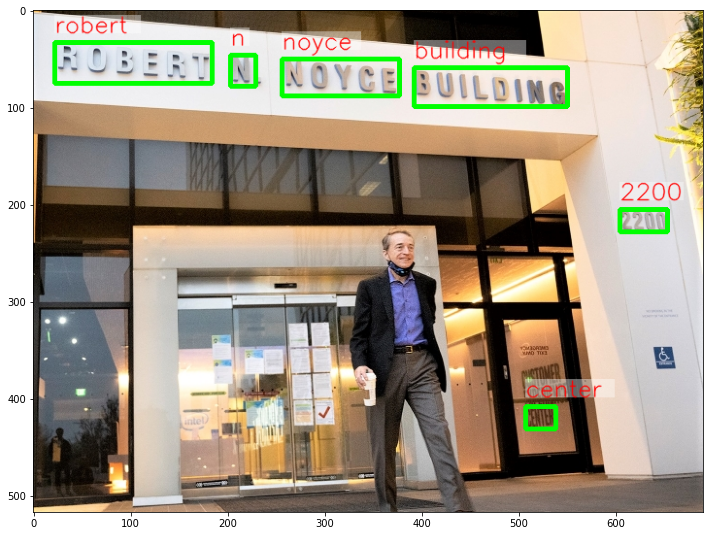
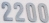

<!DOCTYPE html>

<html lang="en">
  <head>
    <meta charset="utf-8" />
    <meta name="viewport" content="width=device-width, initial-scale=1.0" /><meta name="generator" content="Docutils 0.17.1: http://docutils.sourceforge.net/" />

    <title>Optical Character Recognition (OCR) with OpenVINO &#8212; OpenVINO™  documentation</title>
    
    
  <link href="../_static/css/theme.css" rel="stylesheet">
  <link href="../_static/css/index.ff1ffe594081f20da1ef19478df9384b.css" rel="stylesheet">

    
  <link rel="stylesheet"
    href="../_static/vendor/fontawesome/5.13.0/css/all.min.css">
  <link rel="preload" as="font" type="font/woff2" crossorigin
    href="../_static/vendor/fontawesome/5.13.0/webfonts/fa-solid-900.woff2">
  <link rel="preload" as="font" type="font/woff2" crossorigin
    href="../_static/vendor/fontawesome/5.13.0/webfonts/fa-brands-400.woff2">

    
      

    
    <link rel="stylesheet" type="text/css" href="../_static/pygments.css" />
    <link rel="stylesheet" type="text/css" href="../_static/css/blank.css" />
    <link rel="stylesheet" type="text/css" href="../_static/tabs.css" />
    <link rel="stylesheet" type="text/css" href="../_static/copybutton.css" />
    <link rel="stylesheet" type="text/css" href="../_static/mystnb.css" />
    <link rel="stylesheet" type="text/css" href="../_static/togglebutton.css" />
    <link rel="stylesheet" type="text/css" href="../_static/panels-main.c949a650a448cc0ae9fd3441c0e17fb0.css" />
    <link rel="stylesheet" type="text/css" href="../_static/panels-variables.06eb56fa6e07937060861dad626602ad.css" />
    <link rel="stylesheet" type="text/css" href="../_static/doxyrest-pygments.css" />
    
  <link rel="preload" as="script" href="../_static/js/index.be7d3bbb2ef33a8344ce.js">

    <link href="../_static/css/media/favicon.ico" rel="shortcut icon">
    <link rel="stylesheet" href="../_static/css/openvino_sphinx_theme.css" type="text/css" />
    <link rel="stylesheet" href="../_static/css/button.css" type="text/css" />
    <link rel="stylesheet" href="../_static/css/input.css" type="text/css" />
    <link rel="stylesheet" href="../_static/css/textfield.css" type="text/css" />
    <link rel="stylesheet" href="../_static/css/tabs.css" type="text/css" />
    <script src="../_static/js/openvino_sphinx_theme.js"></script>
    <link rel="stylesheet" href="../_static/css/viewer.min.css" type="text/css" />
    <link rel="stylesheet" href="../_static/css/custom.css" type="text/css" />

    <script src="https://cdn.jsdelivr.net/npm/chart.js@2.9.3/dist/Chart.min.js"></script>
    <script src="https://cdn.jsdelivr.net/npm/chartjs-plugin-datalabels"></script>
    <script src="https://cdnjs.cloudflare.com/ajax/libs/chartjs-plugin-annotation/0.5.7/chartjs-plugin-annotation.min.js"></script>
    <script src="https://cdn.jsdelivr.net/npm/chartjs-plugin-barchart-background@1.3.0/build/Plugin.Barchart.Background.min.js"></script>
    <script src="https://cdn.jsdelivr.net/npm/chartjs-plugin-deferred@1"></script>
    <script src="https://cdnjs.cloudflare.com/ajax/libs/PapaParse/5.3.1/papaparse.min.js"></script>
    <script src="../_static/js/viewer.min.js"></script>
    <script src="/assets/versions_raw.js"></script>

    <script data-url_root="../" id="documentation_options" src="../_static/documentation_options.js"></script>
    <script src="../_static/jquery.js"></script>
    <script src="../_static/underscore.js"></script>
    <script src="../_static/doctools.js"></script>
    <script src="../_static/tabs.js"></script>
    <script src="../_static/clipboard.min.js"></script>
    <script src="../_static/copybutton.js"></script>
    <script src="../_static/js/custom.js"></script>
    <script src="../_static/js/graphs.js"></script>
    <script src="../_static/js/graphs_ov_tf.js"></script>
    <script>let toggleHintShow = 'Click to show';</script>
    <script>let toggleHintHide = 'Click to hide';</script>
    <script>let toggleOpenOnPrint = 'true';</script>
    <script src="../_static/togglebutton.js"></script>
    <script src="../_static/target-highlight.js"></script>
    <script>var togglebuttonSelector = '.toggle, .admonition.dropdown, .tag_hide_input div.cell_input, .tag_hide-input div.cell_input, .tag_hide_output div.cell_output, .tag_hide-output div.cell_output, .tag_hide_cell.cell, .tag_hide-cell.cell';</script>
    <link rel="canonical" href="https://docs.openvino.ai/latest/notebooks/208-optical-character-recognition-with-output.html" />
    <link rel="shortcut icon" href="../_static/favicon.ico"/>
    <link rel="index" title="Index" href="../genindex.html" />
    <link rel="search" title="Search" href="../search.html" />
    <link rel="next" title="Handwritten Chinese and Japanese OCR" href="209-handwritten-ocr-with-output.html" />
    <link rel="prev" title="Super Resolution with PaddleGAN and OpenVINO" href="207-vision-paddlegan-superresolution-with-output.html" />
    <meta name="viewport" content="width=device-width, initial-scale=1" />
    <meta name="docsearch:language" content="en">
    

    <!-- Google Analytics -->
    
  </head>
  <body data-spy="scroll" data-target="#bd-toc-nav" data-offset="80">
    
    <div class="container-fluid" id="banner"></div>

    
      <nav class="navbar navbar-light navbar-expand-lg bg-light fixed-top bd-navbar" id="navbar-main"><div class="container-xl">

  <div id="navbar-start">
    
    

<a class="navbar-brand" href="../index.html">
  
</a>


    
  </div>

  <button class="navbar-toggler" type="button" data-toggle="collapse" data-target="#navbar-collapsible" aria-controls="navbar-collapsible" aria-expanded="false" aria-label="Toggle navigation">
    <span class="navbar-toggler-icon"></span>
  </button>

  
  <div id="navbar-collapsible" class="col-lg-9 collapse navbar-collapse">
    <div id="navbar-center" class="mr-auto">
      
      <div class="navbar-center-item">
        <ul id="navbar-main-elements" class="navbar-nav">
    <li class="toctree-l1 nav-item">
 <a class="reference internal nav-link" href="../pages/get_started.html">
  Get Started
 </a>
</li>

<li class="toctree-l1 nav-item">
 <a class="reference internal nav-link" href="../pages/documentation.html">
  Documentation
 </a>
</li>

<li class="toctree-l1 nav-item">
 <a class="reference internal nav-link" href="../tutorials.html">
  Tutorials
 </a>
</li>

<li class="toctree-l1 nav-item">
 <a class="reference internal nav-link" href="../api/api_reference.html">
  API Reference
 </a>
</li>

<li class="toctree-l1 nav-item">
 <a class="reference internal nav-link" href="../model_zoo.html">
  Model Zoo
 </a>
</li>

<li class="toctree-l1 nav-item">
 <a class="reference internal nav-link" href="../pages/resources.html">
  Resources
 </a>
</li>

    
</ul>
      </div>
      
    </div>

    <div id="navbar-end">
      
      <div class="navbar-end-item">
        <ul id="navbar-icon-links" class="navbar-nav" aria-label="Icon Links">
        <li class="nav-item">
          <a class="nav-link" href="https://github.com/openvinotoolkit/openvino" rel="noopener" target="_blank" title="GitHub">
            <span><i class="sst-github"></i></span>
            <label class="sr-only">GitHub</label>
          </a>
        </li>
</ul>
      </div>
      
      <div class="navbar-end-item">
        
<div class="dropdown sst-dropdown sst-dropdown-navbar">
  <button class="btn sst-btn dropdown-toggle" type="button" id="version-selector" data-toggle="dropdown" aria-haspopup="true" aria-expanded="false"></button>
  <div class="dropdown-menu" aria-labelledby="version-selector">
  </div>
</div>
      </div>
      
      <div class="navbar-end-item">
        

<div class="dropdown sst-dropdown sst-dropdown-navbar">
  <button class="btn sst-btn dropdown-toggle" type="button" id="language-selector" data-toggle="dropdown" aria-haspopup="true" aria-expanded="false">English</button>
  <div class="dropdown-menu" aria-labelledby="language-selector">
    
      
        <a class="dropdown-item font-weight-bold" href="/latest/notebooks/208-optical-character-recognition-with-output.html">English</a>
      
    
      
        <a  class="dropdown-item" href="/cn/latest/notebooks/208-optical-character-recognition-with-output.html">Chinese</a>
      
    
  </div>
</div>

      </div>
      
    </div>
  </div>
</div>
        <div id="collapse-nav-wrapper" class="container-xl">
          <button id="collapse-nav" class="button bttn-prm button-size-m" type="button" data-toggle="collapse" data-target="#nav-tree" aria-expanded="false" aria-controls="nav-tree">
            Documentation navigation <i class="fas fa-chevron-down"></i>
          </button>
        </div>
      </nav>
      <div class="transition-banner container-fluid alert alert-info alert-dismissible fade show" role="alert">
        <p>OpenVINO 2022.1 introduces a new version of OpenVINO API (API 2.0). For more information on the changes and transition steps, see the <a href="https://docs.openvino.ai/latest/openvino_2_0_transition_guide.html">transition guide</a></p>
        <button type="button" class="close" data-dismiss="alert" aria-label="Close">
          <span aria-hidden="true">&times;</span>
        </button>
    </div>
    

    <div class="container-xl">
      <div class="row">
          
            
            <!-- Only show if we have sidebars configured, else just a small margin  -->
            <div class="col-12 col-md-3 bd-sidebar" id="nav-tree"><form class="searchForm bd-search d-flex align-items-center" action="../search.html" method="get">
    <i class="icon fas fa-search"></i>
    <input type="search" class="form-control" name="query" id="search-input" placeholder="Search the docs ..." aria-label="Search the docs ..." autocomplete="off" >
</form><nav class="bd-links" id="bd-docs-nav" aria-label="Main navigation">
  <div class="bd-toc-item active">
    <ul class="nav bd-sidenav">
 <li class="toctree-l1">
  <a class="reference internal" href="001-hello-world-with-output.html">
   Hello Image Classification
  </a>
 </li>
 <li class="toctree-l1">
  <a class="reference internal" href="002-openvino-api-with-output.html">
   OpenVINO API Tutorial
  </a>
 </li>
 <li class="toctree-l1">
  <a class="reference internal" href="003-hello-segmentation-with-output.html">
   Hello Image Segmentation
  </a>
 </li>
 <li class="toctree-l1">
  <a class="reference internal" href="004-hello-detection-with-output.html">
   Hello Object Detection
  </a>
 </li>
</ul>
<ul class="nav bd-sidenav">
 <li class="toctree-l1">
  <a class="reference internal" href="101-tensorflow-to-openvino-with-output.html">
   Convert a TensorFlow Model to OpenVINO
  </a>
 </li>
 <li class="toctree-l1">
  <a class="reference internal" href="102-pytorch-onnx-to-openvino-with-output.html">
   Convert a PyTorch Model to ONNX and OpenVINO IR
  </a>
 </li>
 <li class="toctree-l1">
  <a class="reference internal" href="103-paddle-onnx-to-openvino-classification-with-output.html">
   Convert a PaddlePaddle Model to ONNX and OpenVINO IR
  </a>
 </li>
 <li class="toctree-l1">
  <a class="reference internal" href="104-model-tools-with-output.html">
   Working with Open Model Zoo Models
  </a>
 </li>
 <li class="toctree-l1">
  <a class="reference internal" href="105-language-quantize-bert-with-output.html">
   Quantize NLP models with OpenVINO Post-Training Optimization Tool ​
  </a>
 </li>
 <li class="toctree-l1">
  <a class="reference internal" href="106-auto-device-with-output.html">
   Automatic Device Selection with OpenVINO™
  </a>
 </li>
 <li class="toctree-l1">
  <a class="reference internal" href="110-ct-segmentation-quantize-with-output.html">
   Quantize a Segmentation Model and Show Live Inference
  </a>
 </li>
 <li class="toctree-l1">
  <a class="reference internal" href="111-detection-quantization-with-output.html">
   Object Detection Quantization
  </a>
 </li>
 <li class="toctree-l1">
  <a class="reference internal" href="112-pytorch-post-training-quantization-nncf-with-output.html">
   Post-Training Quantization of PyTorch models with NNCF
  </a>
 </li>
 <li class="toctree-l1">
  <a class="reference internal" href="113-image-classification-quantization-with-output.html">
   Quantization of Image Classification Models
  </a>
 </li>
 <li class="toctree-l1">
  <a class="reference internal" href="114-quantization-simplified-mode-with-output.html">
   INT8 Quantization with Post-training Optimization Tool (POT) in Simplified Mode tutorial
  </a>
 </li>
</ul>
<ul class="current nav bd-sidenav">
 <li class="toctree-l1">
  <a class="reference internal" href="201-vision-monodepth-with-output.html">
   Monodepth Estimation with OpenVINO
  </a>
 </li>
 <li class="toctree-l1">
  <a class="reference internal" href="202-vision-superresolution-image-with-output.html">
   Single Image Super Resolution with OpenVINO
  </a>
 </li>
 <li class="toctree-l1">
  <a class="reference internal" href="202-vision-superresolution-video-with-output.html">
   Video Super Resolution with OpenVINO
  </a>
 </li>
 <li class="toctree-l1">
  <a class="reference internal" href="205-vision-background-removal-with-output.html">
   Image Background Removal with U^2-Net and OpenVINO
  </a>
 </li>
 <li class="toctree-l1">
  <a class="reference internal" href="206-vision-paddlegan-anime-with-output.html">
   Photos to Anime with PaddleGAN and OpenVINO
  </a>
 </li>
 <li class="toctree-l1">
  <a class="reference internal" href="207-vision-paddlegan-superresolution-with-output.html">
   Super Resolution with PaddleGAN and OpenVINO
  </a>
 </li>
 <li class="toctree-l1 current active">
  <a class="current reference internal" href="#">
   Optical Character Recognition (OCR) with OpenVINO
  </a>
 </li>
 <li class="toctree-l1">
  <a class="reference internal" href="209-handwritten-ocr-with-output.html">
   Handwritten Chinese and Japanese OCR
  </a>
 </li>
 <li class="toctree-l1">
  <a class="reference internal" href="210-ct-scan-live-inference-with-output.html">
   Live Inference and Benchmark CT-scan Data with OpenVINO
  </a>
 </li>
 <li class="toctree-l1">
  <a class="reference internal" href="211-speech-to-text-with-output.html">
   Speech to Text with OpenVINO
  </a>
 </li>
 <li class="toctree-l1">
  <a class="reference internal" href="212-onnx-style-transfer-with-output.html">
   Style Transfer on ONNX Models with OpenVINO
  </a>
 </li>
 <li class="toctree-l1">
  <a class="reference internal" href="213-question-answering-with-output.html">
   Interactive question answering with OpenVINO
  </a>
 </li>
 <li class="toctree-l1">
  <a class="reference internal" href="214-vision-paddle-classification-with-output.html">
   PaddlePaddle Image Classification with OpenVINO
  </a>
 </li>
 <li class="toctree-l1">
  <a class="reference internal" href="215-image-inpainting-with-output.html">
   Image In-painting with OpenVINO™
  </a>
 </li>
 <li class="toctree-l1">
  <a class="reference internal" href="217-vision-deblur-with-output.html">
   Deblur Photos with DeblurGAN-v2 and OpenVINO
  </a>
 </li>
 <li class="toctree-l1">
  <a class="reference internal" href="218-vehicle-detection-and-recognition-with-output.html">
   Vehicle Detection And Recognition with OpenVINO
  </a>
 </li>
</ul>
<ul class="nav bd-sidenav">
 <li class="toctree-l1">
  <a class="reference internal" href="301-tensorflow-training-openvino-with-output.html">
   From Training to Deployment with TensorFlow and OpenVINO
  </a>
 </li>
 <li class="toctree-l1">
  <a class="reference internal" href="301-tensorflow-training-openvino-pot-with-output.html">
   Post-Training Quantization with TensorFlow Classification Model
  </a>
 </li>
 <li class="toctree-l1">
  <a class="reference internal" href="302-pytorch-quantization-aware-training-with-output.html">
   Quantization Aware Training with NNCF, using PyTorch framework
  </a>
 </li>
 <li class="toctree-l1">
  <a class="reference internal" href="305-tensorflow-quantization-aware-training-with-output.html">
   Quantization Aware Training with NNCF, using TensorFlow Framework
  </a>
 </li>
</ul>
<ul class="nav bd-sidenav">
 <li class="toctree-l1">
  <a class="reference internal" href="401-object-detection-with-output.html">
   Live Object Detection with OpenVINO
  </a>
 </li>
 <li class="toctree-l1">
  <a class="reference internal" href="402-pose-estimation-with-output.html">
   Live Human Pose Estimation with OpenVINO
  </a>
 </li>
 <li class="toctree-l1">
  <a class="reference internal" href="403-action-recognition-webcam-with-output.html">
   Human Action Recognition with OpenVINO
  </a>
 </li>
 <li class="toctree-l1">
  <a class="reference internal" href="405-paddle-ocr-webcam-with-output.html">
   PaddleOCR with OpenVINO
  </a>
 </li>
</ul>

  </div>
</nav>
            </div>
            
          

          
          <div class="d-none d-xl-block col-xl-2 bd-toc">
            
              
              <div class="toc-item">
                
<div class="tocsection onthispage pt-5 pb-3">
    <i class="fas fa-list"></i> On this page
</div>

<nav id="bd-toc-nav">
    <ul class="visible nav section-nav flex-column">
 <li class="toc-h2 nav-item toc-entry">
  <a class="reference internal nav-link" href="#imports">
   Imports
  </a>
 </li>
 <li class="toc-h2 nav-item toc-entry">
  <a class="reference internal nav-link" href="#settings">
   Settings
  </a>
 </li>
 <li class="toc-h2 nav-item toc-entry">
  <a class="reference internal nav-link" href="#download-models">
   Download Models
  </a>
 </li>
 <li class="toc-h2 nav-item toc-entry">
  <a class="reference internal nav-link" href="#convert-models">
   Convert Models
  </a>
 </li>
 <li class="toc-h2 nav-item toc-entry">
  <a class="reference internal nav-link" href="#copy-models">
   Copy Models
  </a>
 </li>
 <li class="toc-h2 nav-item toc-entry">
  <a class="reference internal nav-link" href="#object-detection">
   Object Detection
  </a>
  <ul class="nav section-nav flex-column">
   <li class="toc-h3 nav-item toc-entry">
    <a class="reference internal nav-link" href="#load-detection-model">
     Load Detection Model
    </a>
   </li>
   <li class="toc-h3 nav-item toc-entry">
    <a class="reference internal nav-link" href="#load-an-image">
     Load an Image
    </a>
   </li>
   <li class="toc-h3 nav-item toc-entry">
    <a class="reference internal nav-link" href="#do-inference">
     Do Inference
    </a>
   </li>
   <li class="toc-h3 nav-item toc-entry">
    <a class="reference internal nav-link" href="#get-detection-results">
     Get Detection Results
    </a>
   </li>
  </ul>
 </li>
 <li class="toc-h2 nav-item toc-entry">
  <a class="reference internal nav-link" href="#text-recogntion">
   Text Recogntion
  </a>
  <ul class="nav section-nav flex-column">
   <li class="toc-h3 nav-item toc-entry">
    <a class="reference internal nav-link" href="#load-text-recognition-model">
     Load Text Recognition Model
    </a>
   </li>
   <li class="toc-h3 nav-item toc-entry">
    <a class="reference internal nav-link" href="#id1">
     Do Inference
    </a>
   </li>
  </ul>
 </li>
 <li class="toc-h2 nav-item toc-entry">
  <a class="reference internal nav-link" href="#show-results">
   Show Results
  </a>
  <ul class="nav section-nav flex-column">
   <li class="toc-h3 nav-item toc-entry">
    <a class="reference internal nav-link" href="#show-detected-text-boxes-and-ocr-results-for-the-image">
     Show Detected Text Boxes and OCR Results for the Image
    </a>
   </li>
   <li class="toc-h3 nav-item toc-entry">
    <a class="reference internal nav-link" href="#show-the-ocr-result-per-bounding-box">
     Show the OCR Result per Bounding Box
    </a>
   </li>
   <li class="toc-h3 nav-item toc-entry">
    <a class="reference internal nav-link" href="#print-annotations-in-plain-text-format">
     Print Annotations in Plain Text Format
    </a>
   </li>
  </ul>
 </li>
</ul>

</nav>
              </div>
              
              <div class="toc-item">
                <div class="tocsection download-docs">
  <div class="dropdown sst-dropdown">
    <button class="button bttn-prm button-size-m" data-display="static" type="button" id="download-options"
      data-toggle="dropdown" aria-haspopup="true" aria-expanded="false">
      Download Docs
    </button>
    <div class="dropdown-menu" aria-labelledby="download-options">
      <a class="dropdown-item" href="#" onclick="window.print()">.pdf</a>
      <a id="download-zip-btn" class="dropdown-item" href="#">.zip</a>
    </div>
  </div>
</div>
              </div>
              
            
          </div>
          

          
          
              
          
          <main class="col-12 col-md-9 col-xl-7 py-md-5 pl-md-5 pr-md-4 bd-content" role="main">

<div class="tocsection editthispage">
    <a href="None">
        <i class="fas fa-pencil-alt"></i> Edit this page
    </a>
</div>

            
                <div>
                  
  <section id="optical-character-recognition-ocr-with-openvino">
<h1>Optical Character Recognition (OCR) with OpenVINO<a class="headerlink" href="#optical-character-recognition-ocr-with-openvino" title="Permalink to this headline">¶</a></h1>
<p>This tutorial demonstrates how to perform optical character recognition
(OCR) with OpenVINO models. It is a continuation of the
<a class="reference external" href="004-hello-detection-with-output.html">004-hello-detection</a>
tutorial, which shows only text detection.</p>
<p>The
<a class="reference external" href="https://docs.openvino.ai/latest/omz_models_model_horizontal_text_detection_0001.html">horizontal-text-detection-0001</a>
and
<a class="reference external" href="https://docs.openvino.ai/latest/omz_models_model_text_recognition_resnet_fc.html">text-recognition-resnet</a>
models are used together for text detection and then text recognition.</p>
<p>In this tutorial, Open Model Zoo tools including Model Downloader, Model
Converter and Info Dumper are used to download and convert the models
from the <a class="reference external" href="https://github.com/openvinotoolkit/open_model_zoo">Open Model
Zoo</a>. See the
<a class="reference external" href="104-model-tools-with-output.html">104-model-tools</a> tutorial
for more information about these tools.</p>
<section id="imports">
<h2>Imports<a class="headerlink" href="#imports" title="Permalink to this headline">¶</a></h2>
<div class="highlight-ipython3 notranslate"><div class="highlight"><pre><span></span><span class="kn">import</span> <span class="nn">shutil</span>
<span class="kn">import</span> <span class="nn">sys</span>
<span class="kn">from</span> <span class="nn">pathlib</span> <span class="kn">import</span> <span class="n">Path</span>

<span class="kn">import</span> <span class="nn">cv2</span>
<span class="kn">import</span> <span class="nn">matplotlib.pyplot</span> <span class="k">as</span> <span class="nn">plt</span>
<span class="kn">import</span> <span class="nn">numpy</span> <span class="k">as</span> <span class="nn">np</span>
<span class="kn">from</span> <span class="nn">IPython.display</span> <span class="kn">import</span> <span class="n">Markdown</span><span class="p">,</span> <span class="n">display</span>
<span class="kn">from</span> <span class="nn">PIL</span> <span class="kn">import</span> <span class="n">Image</span>
<span class="kn">from</span> <span class="nn">openvino.runtime</span> <span class="kn">import</span> <span class="n">Core</span>
<span class="kn">from</span> <span class="nn">yaspin</span> <span class="kn">import</span> <span class="n">yaspin</span>

<span class="n">sys</span><span class="o">.</span><span class="n">path</span><span class="o">.</span><span class="n">append</span><span class="p">(</span><span class="s2">&quot;../utils&quot;</span><span class="p">)</span>
<span class="kn">from</span> <span class="nn">notebook_utils</span> <span class="kn">import</span> <span class="n">load_image</span>
</pre></div>
</div>
</section>
<section id="settings">
<h2>Settings<a class="headerlink" href="#settings" title="Permalink to this headline">¶</a></h2>
<div class="highlight-ipython3 notranslate"><div class="highlight"><pre><span></span><span class="n">ie</span> <span class="o">=</span> <span class="n">Core</span><span class="p">()</span>

<span class="n">model_dir</span> <span class="o">=</span> <span class="n">Path</span><span class="p">(</span><span class="s2">&quot;model&quot;</span><span class="p">)</span>
<span class="n">precision</span> <span class="o">=</span> <span class="s2">&quot;FP16&quot;</span>
<span class="n">detection_model</span> <span class="o">=</span> <span class="s2">&quot;horizontal-text-detection-0001&quot;</span>
<span class="n">recognition_model</span> <span class="o">=</span> <span class="s2">&quot;text-recognition-resnet-fc&quot;</span>
<span class="n">base_model_dir</span> <span class="o">=</span> <span class="n">Path</span><span class="p">(</span><span class="s2">&quot;~/open_model_zoo_models&quot;</span><span class="p">)</span><span class="o">.</span><span class="n">expanduser</span><span class="p">()</span>
<span class="n">omz_cache_dir</span> <span class="o">=</span> <span class="n">Path</span><span class="p">(</span><span class="s2">&quot;~/open_model_zoo_cache&quot;</span><span class="p">)</span><span class="o">.</span><span class="n">expanduser</span><span class="p">()</span>

<span class="n">model_dir</span><span class="o">.</span><span class="n">mkdir</span><span class="p">(</span><span class="n">exist_ok</span><span class="o">=</span><span class="kc">True</span><span class="p">)</span>
</pre></div>
</div>
</section>
<section id="download-models">
<h2>Download Models<a class="headerlink" href="#download-models" title="Permalink to this headline">¶</a></h2>
<p>The next cells will run Open Model Zoo’s Model Downloader to download
the detection and recognition models. If the models have been downloaded
before, they will not be downloaded again.</p>
<div class="highlight-ipython3 notranslate"><div class="highlight"><pre><span></span><span class="n">download_command</span> <span class="o">=</span> <span class="sa">f</span><span class="s2">&quot;omz_downloader --name </span><span class="si">{</span><span class="n">detection_model</span><span class="si">}</span><span class="s2">,</span><span class="si">{</span><span class="n">recognition_model</span><span class="si">}</span><span class="s2"> --output_dir </span><span class="si">{</span><span class="n">base_model_dir</span><span class="si">}</span><span class="s2"> --cache_dir </span><span class="si">{</span><span class="n">omz_cache_dir</span><span class="si">}</span><span class="s2"> --precision </span><span class="si">{</span><span class="n">precision</span><span class="si">}</span><span class="s2">&quot;</span>
<span class="n">display</span><span class="p">(</span><span class="n">Markdown</span><span class="p">(</span><span class="sa">f</span><span class="s2">&quot;Download command: `</span><span class="si">{</span><span class="n">download_command</span><span class="si">}</span><span class="s2">`&quot;</span><span class="p">))</span>
<span class="k">with</span> <span class="n">yaspin</span><span class="p">(</span><span class="n">text</span><span class="o">=</span><span class="sa">f</span><span class="s2">&quot;Downloading </span><span class="si">{</span><span class="n">detection_model</span><span class="si">}</span><span class="s2">, </span><span class="si">{</span><span class="n">recognition_model</span><span class="si">}</span><span class="s2">&quot;</span><span class="p">)</span> <span class="k">as</span> <span class="n">sp</span><span class="p">:</span>
    <span class="n">download_result</span> <span class="o">=</span> <span class="o">!</span><span class="nv">$download_command</span>
    <span class="nb">print</span><span class="p">(</span><span class="n">download_result</span><span class="p">)</span>
    <span class="n">sp</span><span class="o">.</span><span class="n">text</span> <span class="o">=</span> <span class="sa">f</span><span class="s2">&quot;Finished downloading </span><span class="si">{</span><span class="n">detection_model</span><span class="si">}</span><span class="s2">, </span><span class="si">{</span><span class="n">recognition_model</span><span class="si">}</span><span class="s2">&quot;</span>
    <span class="n">sp</span><span class="o">.</span><span class="n">ok</span><span class="p">(</span><span class="s2">&quot;✔&quot;</span><span class="p">)</span>
</pre></div>
</div>
<p>Download command:
<code class="docutils literal notranslate"><span class="pre">omz_downloader</span> <span class="pre">--name</span> <span class="pre">horizontal-text-detection-0001,text-recognition-resnet-fc</span> <span class="pre">--output_dir</span> <span class="pre">/home/runner/open_model_zoo_models</span> <span class="pre">--cache_dir</span> <span class="pre">/home/runner/open_model_zoo_cache</span> <span class="pre">--precision</span> <span class="pre">FP16</span></code></p>
<div class="highlight-default notranslate"><div class="highlight"><pre><span></span>⠏ Downloading horizontal-text-detection-0001, text-recognition-resnet-fc[&#39;################|| Downloading horizontal-text-detection-0001 ||################&#39;, &#39;&#39;, &#39;========== Downloading /home/runner/open_model_zoo_models/intel/horizontal-text-detection-0001/FP16/horizontal-text-detection-0001.xml&#39;, &#39;... 100%, 956 KB, 2563 KB/s, 0 seconds passed&#39;, &#39;&#39;, &#39;========== Downloading /home/runner/open_model_zoo_models/intel/horizontal-text-detection-0001/FP16/horizontal-text-detection-0001.bin&#39;, &#39;... 27%, 1024 KB, 2711 KB/s, 0 seconds passed&#39;, &#39;... 54%, 2048 KB, 4473 KB/s, 0 seconds passed&#39;, &#39;... 81%, 3072 KB, 5850 KB/s, 0 seconds passed&#39;, &#39;... 100%, 3786 KB, 7160 KB/s, 0 seconds passed&#39;, &#39;&#39;, &#39;################|| Downloading text-recognition-resnet-fc ||################&#39;, &#39;&#39;, &#39;========== Downloading /home/runner/open_model_zoo_models/public/text-recognition-resnet-fc/vedastr/models/__init__.py&#39;, &#39;... 100%, 0 KB, 100 KB/s, 0 seconds passed&#39;, &#39;&#39;, &#39;========== Downloading /home/runner/open_model_zoo_models/public/text-recognition-resnet-fc/vedastr/models/builder.py&#39;, &#39;... 100%, 0 KB, 597 KB/s, 0 seconds passed&#39;, &#39;&#39;, &#39;========== Downloading /home/runner/open_model_zoo_models/public/text-recognition-resnet-fc/vedastr/models/model.py&#39;, &#39;... 100%, 0 KB, 2086 KB/s, 0 seconds passed&#39;, &#39;&#39;, &#39;========== Downloading /home/runner/open_model_zoo_models/public/text-recognition-resnet-fc/vedastr/models/weight_init.py&#39;, &#39;... 100%, 3 KB, 10539 KB/s, 0 seconds passed&#39;, &#39;&#39;, &#39;========== Downloading /home/runner/open_model_zoo_models/public/text-recognition-resnet-fc/vedastr/models/registry.py&#39;, &#39;... 100%, 0 KB, 192 KB/s, 0 seconds passed&#39;, &#39;&#39;, &#39;========== Downloading /home/runner/open_model_zoo_models/public/text-recognition-resnet-fc/vedastr/models/heads/__init__.py&#39;, &#39;... 100%, 0 KB, 610 KB/s, 0 seconds passed&#39;, &#39;&#39;, &#39;========== Downloading /home/runner/open_model_zoo_models/public/text-recognition-resnet-fc/vedastr/models/heads/builder.py&#39;, &#39;... 100%, 0 KB, 604 KB/s, 0 seconds passed&#39;, &#39;&#39;, &#39;========== Downloading /home/runner/open_model_zoo_models/public/text-recognition-resnet-fc/vedastr/models/heads/fc_head.py&#39;, &#39;... 100%, 1 KB, 5966 KB/s, 0 seconds passed&#39;, &#39;&#39;, &#39;========== Downloading /home/runner/open_model_zoo_models/public/text-recognition-resnet-fc/vedastr/models/heads/registry.py&#39;, &#39;... 100%, 0 KB, 241 KB/s, 0 seconds passed&#39;, &#39;&#39;, &#39;========== Downloading /home/runner/open_model_zoo_models/public/text-recognition-resnet-fc/vedastr/models/bodies/__init__.py&#39;, &#39;... 100%, 0 KB, 1368 KB/s, 0 seconds passed&#39;, &#39;&#39;, &#39;========== Downloading /home/runner/open_model_zoo_models/public/text-recognition-resnet-fc/vedastr/models/bodies/builder.py&#39;, &#39;... 100%, 0 KB, 1063 KB/s, 0 seconds passed&#39;, &#39;&#39;, &#39;========== Downloading /home/runner/open_model_zoo_models/public/text-recognition-resnet-fc/vedastr/models/bodies/registry.py&#39;, &#39;... 100%, 0 KB, 340 KB/s, 0 seconds passed&#39;, &#39;&#39;, &#39;========== Downloading /home/runner/open_model_zoo_models/public/text-recognition-resnet-fc/vedastr/models/bodies/body.py&#39;, &#39;... 100%, 1 KB, 4043 KB/s, 0 seconds passed&#39;, &#39;&#39;, &#39;========== Downloading /home/runner/open_model_zoo_models/public/text-recognition-resnet-fc/vedastr/models/bodies/component.py&#39;, &#39;... 100%, 1 KB, 3768 KB/s, 0 seconds passed&#39;, &#39;&#39;, &#39;========== Downloading /home/runner/open_model_zoo_models/public/text-recognition-resnet-fc/vedastr/models/bodies/sequences/__init__.py&#39;, &#39;... 100%, 0 KB, 468 KB/s, 0 seconds passed&#39;, &#39;&#39;, &#39;========== Downloading /home/runner/open_model_zoo_models/public/text-recognition-resnet-fc/vedastr/models/bodies/sequences/builder.py&#39;, &#39;... 100%, 0 KB, 1363 KB/s, 0 seconds passed&#39;, &#39;&#39;, &#39;========== Downloading /home/runner/open_model_zoo_models/public/text-recognition-resnet-fc/vedastr/models/bodies/sequences/registry.py&#39;, &#39;... 100%, 0 KB, 425 KB/s, 0 seconds passed&#39;, &#39;&#39;, &#39;========== Downloading /home/runner/open_model_zoo_models/public/text-recognition-resnet-fc/vedastr/models/bodies/feature_extractors/__init__.py&#39;, &#39;... 100%, 0 KB, 602 KB/s, 0 seconds passed&#39;, &#39;&#39;, &#39;========== Downloading /home/runner/open_model_zoo_models/public/text-recognition-resnet-fc/vedastr/models/bodies/feature_extractors/builder.py&#39;, &#39;... 100%, 0 KB, 2286 KB/s, 0 seconds passed&#39;, &#39;&#39;, &#39;========== Downloading /home/runner/open_model_zoo_models/public/text-recognition-resnet-fc/vedastr/models/bodies/feature_extractors/decoders/__init__.py&#39;, &#39;... 100%, 0 KB, 368 KB/s, 0 seconds passed&#39;, &#39;&#39;, &#39;========== Downloading /home/runner/open_model_zoo_models/public/text-recognition-resnet-fc/vedastr/models/bodies/feature_extractors/decoders/builder.py&#39;, &#39;... 100%, 0 KB, 646 KB/s, 0 seconds passed&#39;, &#39;&#39;, &#39;========== Downloading /home/runner/open_model_zoo_models/public/text-recognition-resnet-fc/vedastr/models/bodies/feature_extractors/decoders/registry.py&#39;, &#39;... 100%, 0 KB, 225 KB/s, 0 seconds passed&#39;, &#39;&#39;, &#39;========== Downloading /home/runner/open_model_zoo_models/public/text-recognition-resnet-fc/vedastr/models/bodies/feature_extractors/decoders/bricks/__init__.py&#39;, &#39;... 100%, 0 KB, 514 KB/s, 0 seconds passed&#39;, &#39;&#39;, &#39;========== Downloading /home/runner/open_model_zoo_models/public/text-recognition-resnet-fc/vedastr/models/bodies/feature_extractors/decoders/bricks/bricks.py&#39;, &#39;... 100%, 6 KB, 19883 KB/s, 0 seconds passed&#39;, &#39;&#39;, &#39;========== Downloading /home/runner/open_model_zoo_models/public/text-recognition-resnet-fc/vedastr/models/bodies/feature_extractors/decoders/bricks/builder.py&#39;, &#39;... 100%, 0 KB, 1085 KB/s, 0 seconds passed&#39;, &#39;&#39;, &#39;========== Downloading /home/runner/open_model_zoo_models/public/text-recognition-resnet-fc/vedastr/models/bodies/feature_extractors/decoders/bricks/registry.py&#39;, &#39;... 100%, 0 KB, 219 KB/s, 0 seconds passed&#39;, &#39;&#39;, &#39;========== Downloading /home/runner/open_model_zoo_models/public/text-recognition-resnet-fc/vedastr/models/bodies/feature_extractors/encoders/__init__.py&#39;, &#39;... 100%, 0 KB, 394 KB/s, 0 seconds passed&#39;, &#39;&#39;, &#39;========== Downloading /home/runner/open_model_zoo_models/public/text-recognition-resnet-fc/vedastr/models/bodies/feature_extractors/encoders/builder.py&#39;, &#39;... 100%, 0 KB, 1391 KB/s, 0 seconds passed&#39;, &#39;&#39;, &#39;========== Downloading /home/runner/open_model_zoo_models/public/text-recognition-resnet-fc/vedastr/models/bodies/feature_extractors/encoders/backbones/__init__.py&#39;, &#39;... 100%, 0 KB, 303 KB/s, 0 seconds passed&#39;, &#39;&#39;, &#39;========== Downloading /home/runner/open_model_zoo_models/public/text-recognition-resnet-fc/vedastr/models/bodies/feature_extractors/encoders/backbones/builder.py&#39;, &#39;... 100%, 0 KB, 638 KB/s, 0 seconds passed&#39;, &#39;&#39;, &#39;========== Downloading /home/runner/open_model_zoo_models/public/text-recognition-resnet-fc/vedastr/models/bodies/feature_extractors/encoders/backbones/registry.py&#39;, &#39;... 100%, 0 KB, 224 KB/s, 0 seconds passed&#39;, &#39;&#39;, &#39;========== Downloading /home/runner/open_model_zoo_models/public/text-recognition-resnet-fc/vedastr/models/bodies/feature_extractors/encoders/backbones/resnet.py&#39;, &#39;... 100%, 8 KB, 26187 KB/s, 0 seconds passed&#39;, &#39;&#39;, &#39;========== Downloading /home/runner/open_model_zoo_models/public/text-recognition-resnet-fc/vedastr/models/bodies/feature_extractors/encoders/enhance_modules/__init__.py&#39;, &#39;... 100%, 0 KB, 288 KB/s, 0 seconds passed&#39;, &#39;&#39;, &#39;========== Downloading /home/runner/open_model_zoo_models/public/text-recognition-resnet-fc/vedastr/models/bodies/feature_extractors/encoders/enhance_modules/builder.py&#39;, &#39;... 100%, 0 KB, 740 KB/s, 0 seconds passed&#39;, &#39;&#39;, &#39;========== Downloading /home/runner/open_model_zoo_models/public/text-recognition-resnet-fc/vedastr/models/bodies/feature_extractors/encoders/enhance_modules/registry.py&#39;, &#39;... 100%, 0 KB, 270 KB/s, 0 seconds passed&#39;, &#39;&#39;, &#39;========== Downloading /home/runner/open_model_zoo_models/public/text-recognition-resnet-fc/vedastr/models/utils/__init__.py&#39;, &#39;... 100%, 0 KB, 692 KB/s, 0 seconds passed&#39;, &#39;&#39;, &#39;========== Downloading /home/runner/open_model_zoo_models/public/text-recognition-resnet-fc/vedastr/models/utils/builder.py&#39;, &#39;... 100%, 0 KB, 1085 KB/s, 0 seconds passed&#39;, &#39;&#39;, &#39;========== Downloading /home/runner/open_model_zoo_models/public/text-recognition-resnet-fc/vedastr/models/utils/conv_module.py&#39;, &#39;... 100%, 7 KB, 19480 KB/s, 0 seconds passed&#39;, &#39;&#39;, &#39;========== Downloading /home/runner/open_model_zoo_models/public/text-recognition-resnet-fc/vedastr/models/utils/fc_module.py&#39;, &#39;... 100%, 2 KB, 8380 KB/s, 0 seconds passed&#39;, &#39;&#39;, &#39;========== Downloading /home/runner/open_model_zoo_models/public/text-recognition-resnet-fc/vedastr/models/utils/norm.py&#39;, &#39;... 100%, 1 KB, 5302 KB/s, 0 seconds passed&#39;, &#39;&#39;, &#39;========== Downloading /home/runner/open_model_zoo_models/public/text-recognition-resnet-fc/vedastr/models/utils/registry.py&#39;, &#39;... 100%, 0 KB, 203 KB/s, 0 seconds passed&#39;, &#39;&#39;, &#39;========== Downloading /home/runner/open_model_zoo_models/public/text-recognition-resnet-fc/vedastr/utils/__init__.py&#39;, &#39;... 100%, 0 KB, 849 KB/s, 0 seconds passed&#39;, &#39;&#39;, &#39;========== Downloading /home/runner/open_model_zoo_models/public/text-recognition-resnet-fc/vedastr/utils/common.py&#39;, &#39;... 100%, 3 KB, 10638 KB/s, 0 seconds passed&#39;, &#39;&#39;, &#39;========== Downloading /home/runner/open_model_zoo_models/public/text-recognition-resnet-fc/vedastr/utils/registry.py&#39;, &#39;... 100%, 1 KB, 4151 KB/s, 0 seconds passed&#39;, &#39;&#39;, &#39;========== Downloading /home/runner/open_model_zoo_models/public/text-recognition-resnet-fc/vedastr/utils/config.py&#39;, &#39;... 100%, 5 KB, 15682 KB/s, 0 seconds passed&#39;, &#39;&#39;, &#39;========== Downloading /home/runner/open_model_zoo_models/public/text-recognition-resnet-fc/vedastr/configs/resnet_fc.py&#39;, &#39;... 100%, 8 KB, 23694 KB/s, 0 seconds passed&#39;, &#39;&#39;, &#39;========== Downloading /home/runner/open_model_zoo_models/public/text-recognition-resnet-fc/vedastr/ckpt/resnet_fc.pth&#39;, &#39;... 0%, 1024 KB, 2750 KB/s, 0 seconds passed&#39;, &#39;... 0%, 2048 KB, 4581 KB/s, 0 seconds passed&#39;, &#39;... 0%, 3072 KB, 5910 KB/s, 0 seconds passed&#39;, &#39;... 0%, 4096 KB, 7822 KB/s, 0 seconds passed&#39;, &#39;... 0%, 5120 KB, 8651 KB/s, 0 seconds passed&#39;, &#39;... 0%, 6144 KB, 10280 KB/s, 0 seconds passed&#39;, &#39;... 1%, 7168 KB, 11906 KB/s, 0 seconds passed&#39;, &#39;... 1%, 8192 KB, 13490 KB/s, 0 seconds passed&#39;, &#39;... 1%, 9216 KB, 15006 KB/s, 0 seconds passed&#39;, &#39;... 1%, 10240 KB, 15363 KB/s, 0 seconds passed&#39;, &#39;... 1%, 11264 KB, 16761 KB/s, 0 seconds passed&#39;, &#39;... 1%, 12288 KB, 18164 KB/s, 0 seconds passed&#39;, &#39;... 1%, 13312 KB, 19543 KB/s, 0 seconds passed&#39;, &#39;... 2%, 14336 KB, 19344 KB/s, 0 seconds passed&#39;, &#39;... 2%, 15360 KB, 20584 KB/s, 0 seconds passed&#39;, &#39;... 2%, 16384 KB, 21843 KB/s, 0 seconds passed&#39;, &#39;... 2%, 17408 KB, 22902 KB/s, 0 seconds passed&#39;, &#39;... 2%, 18432 KB, 22651 KB/s, 0 seconds passed&#39;, &#39;... 2%, 19456 KB, 23791 KB/s, 0 seconds passed&#39;, &#39;... 2%, 20480 KB, 24932 KB/s, 0 seconds passed&#39;, &#39;... 3%, 21504 KB, 25853 KB/s, 0 seconds passed&#39;, &#39;... 3%, 22528 KB, 25445 KB/s, 0 seconds passed&#39;, &#39;... 3%, 23552 KB, 26473 KB/s, 0 seconds passed&#39;, &#39;... 3%, 24576 KB, 27498 KB/s, 0 seconds passed&#39;, &#39;... 3%, 25600 KB, 28330 KB/s, 0 seconds passed&#39;, &#39;... 3%, 26624 KB, 29341 KB/s, 0 seconds passed&#39;, &#39;... 3%, 27648 KB, 28756 KB/s, 0 seconds passed&#39;, &#39;... 4%, 28672 KB, 29688 KB/s, 0 seconds passed&#39;, &#39;... 4%, 29696 KB, 30628 KB/s, 0 seconds passed&#39;, &#39;... 4%, 30720 KB, 31355 KB/s, 0 seconds passed&#39;, &#39;... 4%, 31744 KB, 32279 KB/s, 0 seconds passed&#39;, &#39;... 4%, 32768 KB, 31624 KB/s, 1 seconds passed&#39;, &#39;... 4%, 33792 KB, 32459 KB/s, 1 seconds passed&#39;, &#39;... 5%, 34816 KB, 33239 KB/s, 1 seconds passed&#39;, &#39;... 5%, 35840 KB, 34076 KB/s, 1 seconds passed&#39;, &#39;... 5%, 36864 KB, 34749 KB/s, 1 seconds passed&#39;, &#39;... 5%, 37888 KB, 33973 KB/s, 1 seconds passed&#39;, &#39;... 5%, 38912 KB, 34513 KB/s, 1 seconds passed&#39;, &#39;... 5%, 39936 KB, 35277 KB/s, 1 seconds passed&#39;, &#39;... 5%, 40960 KB, 36027 KB/s, 1 seconds passed&#39;, &#39;... 6%, 41984 KB, 35482 KB/s, 1 seconds passed&#39;, &#39;... 6%, 43008 KB, 36199 KB/s, 1 seconds passed&#39;, &#39;... 6%, 44032 KB, 36662 KB/s, 1 seconds passed&#39;, &#39;... 6%, 45056 KB, 35852 KB/s, 1 seconds passed&#39;, &#39;... 6%, 46080 KB, 36504 KB/s, 1 seconds passed&#39;, &#39;... 6%, 47104 KB, 37170 KB/s, 1 seconds passed&#39;, &#39;... 6%, 48128 KB, 37838 KB/s, 1 seconds passed&#39;, &#39;... 7%, 49152 KB, 38393 KB/s, 1 seconds passed&#39;, &#39;... 7%, 50176 KB, 37663 KB/s, 1 seconds passed&#39;, &#39;... 7%, 51200 KB, 38296 KB/s, 1 seconds passed&#39;, &#39;... 7%, 52224 KB, 38847 KB/s, 1 seconds passed&#39;, &#39;... 7%, 53248 KB, 39432 KB/s, 1 seconds passed&#39;, &#39;... 7%, 54272 KB, 38663 KB/s, 1 seconds passed&#39;, &#39;... 7%, 55296 KB, 39274 KB/s, 1 seconds passed&#39;, &#39;... 8%, 56320 KB, 39798 KB/s, 1 seconds passed&#39;, &#39;... 8%, 57344 KB, 40333 KB/s, 1 seconds passed&#39;, &#39;... 8%, 58368 KB, 40950 KB/s, 1 seconds passed&#39;, &#39;... 8%, 59392 KB, 40121 KB/s, 1 seconds passed&#39;, &#39;... 8%, 60416 KB, 40678 KB/s, 1 seconds passed&#39;, &#39;... 8%, 61440 KB, 41048 KB/s, 1 seconds passed&#39;, &#39;... 8%, 62464 KB, 41581 KB/s, 1 seconds passed&#39;, &#39;... 9%, 63488 KB, 42129 KB/s, 1 seconds passed&#39;, &#39;... 9%, 64512 KB, 41531 KB/s, 1 seconds passed&#39;, &#39;... 9%, 65536 KB, 42074 KB/s, 1 seconds passed&#39;, &#39;... 9%, 66560 KB, 41469 KB/s, 1 seconds passed&#39;, &#39;... 9%, 67584 KB, 41962 KB/s, 1 seconds passed&#39;, &#39;... 9%, 68608 KB, 42494 KB/s, 1 seconds passed&#39;, &#39;... 10%, 69632 KB, 42791 KB/s, 1 seconds passed&#39;, &#39;... 10%, 70656 KB, 43316 KB/s, 1 seconds passed&#39;, &#39;... 10%, 71680 KB, 41139 KB/s, 1 seconds passed&#39;, &#39;... 10%, 72704 KB, 41620 KB/s, 1 seconds passed&#39;, &#39;... 10%, 73728 KB, 42105 KB/s, 1 seconds passed&#39;, &#39;... 10%, 74752 KB, 42539 KB/s, 1 seconds passed&#39;, &#39;... 10%, 75776 KB, 42960 KB/s, 1 seconds passed&#39;, &#39;... 11%, 76800 KB, 41581 KB/s, 1 seconds passed&#39;, &#39;... 11%, 77824 KB, 42008 KB/s, 1 seconds passed&#39;, &#39;... 11%, 78848 KB, 42439 KB/s, 1 seconds passed&#39;, &#39;... 11%, 79872 KB, 42869 KB/s, 1 seconds passed&#39;, &#39;... 11%, 80896 KB, 43245 KB/s, 1 seconds passed&#39;, &#39;... 11%, 81920 KB, 42382 KB/s, 1 seconds passed&#39;, &#39;... 11%, 82944 KB, 42310 KB/s, 1 seconds passed&#39;, &#39;... 12%, 83968 KB, 42647 KB/s, 1 seconds passed&#39;, &#39;... 12%, 84992 KB, 43061 KB/s, 1 seconds passed&#39;, &#39;... 12%, 86016 KB, 43485 KB/s, 1 seconds passed&#39;, &#39;... 12%, 87040 KB, 42911 KB/s, 2 seconds passed&#39;, &#39;... 12%, 88064 KB, 43116 KB/s, 2 seconds passed&#39;, &#39;... 12%, 89088 KB, 43524 KB/s, 2 seconds passed&#39;, &#39;... 12%, 90112 KB, 43904 KB/s, 2 seconds passed&#39;, &#39;... 13%, 91136 KB, 44238 KB/s, 2 seconds passed&#39;, &#39;... 13%, 92160 KB, 43005 KB/s, 2 seconds passed&#39;, &#39;... 13%, 93184 KB, 43403 KB/s, 2 seconds passed&#39;, &#39;... 13%, 94208 KB, 43785 KB/s, 2 seconds passed&#39;, &#39;... 13%, 95232 KB, 44101 KB/s, 2 seconds passed&#39;, &#39;... 13%, 96256 KB, 44489 KB/s, 2 seconds passed&#39;, &#39;... 13%, 97280 KB, 43582 KB/s, 2 seconds passed&#39;, &#39;... 14%, 98304 KB, 43955 KB/s, 2 seconds passed&#39;, &#39;... 14%, 99328 KB, 44294 KB/s, 2 seconds passed&#39;, &#39;... 14%, 100352 KB, 44653 KB/s, 2 seconds passed&#39;, &#39;... 14%, 101376 KB, 44986 KB/s, 2 seconds passed&#39;, &#39;... 14%, 102400 KB, 44325 KB/s, 2 seconds passed&#39;, &#39;... 14%, 103424 KB, 44641 KB/s, 2 seconds passed&#39;, &#39;... 15%, 104448 KB, 45000 KB/s, 2 seconds passed&#39;, &#39;... 15%, 105472 KB, 45336 KB/s, 2 seconds passed&#39;, &#39;... 15%, 106496 KB, 45617 KB/s, 2 seconds passed&#39;, &#39;... 15%, 107520 KB, 44890 KB/s, 2 seconds passed&#39;, &#39;... 15%, 108544 KB, 45216 KB/s, 2 seconds passed&#39;, &#39;... 15%, 109568 KB, 45551 KB/s, 2 seconds passed&#39;, &#39;... 15%, 110592 KB, 45777 KB/s, 2 seconds passed&#39;, &#39;... 16%, 111616 KB, 46081 KB/s, 2 seconds passed&#39;, &#39;... 16%, 112640 KB, 45073 KB/s, 2 seconds passed&#39;, &#39;... 16%, 113664 KB, 45289 KB/s, 2 seconds passed&#39;, &#39;... 16%, 114688 KB, 45588 KB/s, 2 seconds passed&#39;, &#39;... 16%, 115712 KB, 45872 KB/s, 2 seconds passed&#39;, &#39;... 16%, 116736 KB, 46178 KB/s, 2 seconds passed&#39;, &#39;... 16%, 117760 KB, 45368 KB/s, 2 seconds passed&#39;, &#39;... 17%, 118784 KB, 45688 KB/s, 2 seconds passed&#39;, &#39;... 17%, 119808 KB, 45994 KB/s, 2 seconds passed&#39;, &#39;... 17%, 120832 KB, 45543 KB/s, 2 seconds passed&#39;, &#39;... 17%, 121856 KB, 45769 KB/s, 2 seconds passed&#39;, &#39;... 17%, 122880 KB, 44061 KB/s, 2 seconds passed&#39;, &#39;... 17%, 123904 KB, 44322 KB/s, 2 seconds passed&#39;, &#39;... 17%, 124928 KB, 44631 KB/s, 2 seconds passed&#39;, &#39;... 18%, 125952 KB, 44794 KB/s, 2 seconds passed&#39;, &#39;... 18%, 126976 KB, 44995 KB/s, 2 seconds passed&#39;, &#39;... 18%, 128000 KB, 44360 KB/s, 2 seconds passed&#39;, &#39;... 18%, 129024 KB, 44563 KB/s, 2 seconds passed&#39;, &#39;... 18%, 130048 KB, 44837 KB/s, 2 seconds passed&#39;, &#39;... 18%, 131072 KB, 45074 KB/s, 2 seconds passed&#39;, &#39;... 18%, 132096 KB, 45344 KB/s, 2 seconds passed&#39;, &#39;... 19%, 133120 KB, 44516 KB/s, 2 seconds passed&#39;, &#39;... 19%, 134144 KB, 44743 KB/s, 2 seconds passed&#39;, &#39;... 19%, 135168 KB, 45031 KB/s, 3 seconds passed&#39;, &#39;... 19%, 136192 KB, 45267 KB/s, 3 seconds passed&#39;, &#39;... 19%, 137216 KB, 45500 KB/s, 3 seconds passed&#39;, &#39;... 19%, 138240 KB, 43507 KB/s, 3 seconds passed&#39;, &#39;... 20%, 139264 KB, 43748 KB/s, 3 seconds passed&#39;, &#39;... 20%, 140288 KB, 43932 KB/s, 3 seconds passed&#39;, &#39;... 20%, 141312 KB, 44189 KB/s, 3 seconds passed&#39;, &#39;... 20%, 142336 KB, 44452 KB/s, 3 seconds passed&#39;, &#39;... 20%, 143360 KB, 44059 KB/s, 3 seconds passed&#39;, &#39;... 20%, 144384 KB, 44246 KB/s, 3 seconds passed&#39;, &#39;... 20%, 145408 KB, 43646 KB/s, 3 seconds passed&#39;, &#39;... 21%, 146432 KB, 43890 KB/s, 3 seconds passed&#39;, &#39;... 21%, 147456 KB, 44145 KB/s, 3 seconds passed&#39;, &#39;... 21%, 148480 KB, 43416 KB/s, 3 seconds passed&#39;, &#39;... 21%, 149504 KB, 43643 KB/s, 3 seconds passed&#39;, &#39;... 21%, 150528 KB, 43872 KB/s, 3 seconds passed&#39;, &#39;... 21%, 151552 KB, 44069 KB/s, 3 seconds passed&#39;, &#39;... 21%, 152576 KB, 44228 KB/s, 3 seconds passed&#39;, &#39;... 22%, 153600 KB, 43670 KB/s, 3 seconds passed&#39;, &#39;... 22%, 154624 KB, 43764 KB/s, 3 seconds passed&#39;, &#39;... 22%, 155648 KB, 43997 KB/s, 3 seconds passed&#39;, &#39;... 22%, 156672 KB, 44223 KB/s, 3 seconds passed&#39;, &#39;... 22%, 157696 KB, 44163 KB/s, 3 seconds passed&#39;, &#39;... 22%, 158720 KB, 43711 KB/s, 3 seconds passed&#39;, &#39;... 22%, 159744 KB, 43702 KB/s, 3 seconds passed&#39;, &#39;... 23%, 160768 KB, 43928 KB/s, 3 seconds passed&#39;, &#39;... 23%, 161792 KB, 44165 KB/s, 3 seconds passed&#39;, &#39;... 23%, 162816 KB, 44360 KB/s, 3 seconds passed&#39;, &#39;... 23%, 163840 KB, 43885 KB/s, 3 seconds passed&#39;, &#39;... 23%, 164864 KB, 44097 KB/s, 3 seconds passed&#39;, &#39;... 23%, 165888 KB, 44320 KB/s, 3 seconds passed&#39;, &#39;... 23%, 166912 KB, 44492 KB/s, 3 seconds passed&#39;, &#39;... 24%, 167936 KB, 44712 KB/s, 3 seconds passed&#39;, &#39;... 24%, 168960 KB, 44185 KB/s, 3 seconds passed&#39;, &#39;... 24%, 169984 KB, 44379 KB/s, 3 seconds passed&#39;, &#39;... 24%, 171008 KB, 44595 KB/s, 3 seconds passed&#39;, &#39;... 24%, 172032 KB, 44777 KB/s, 3 seconds passed&#39;, &#39;... 24%, 173056 KB, 44963 KB/s, 3 seconds passed&#39;, &#39;... 25%, 174080 KB, 44652 KB/s, 3 seconds passed&#39;, &#39;... 25%, 175104 KB, 44858 KB/s, 3 seconds passed&#39;, &#39;... 25%, 176128 KB, 45070 KB/s, 3 seconds passed&#39;, &#39;... 25%, 177152 KB, 45257 KB/s, 3 seconds passed&#39;, &#39;... 25%, 178176 KB, 45342 KB/s, 3 seconds passed&#39;, &#39;... 25%, 179200 KB, 44253 KB/s, 4 seconds passed&#39;, &#39;... 25%, 180224 KB, 44444 KB/s, 4 seconds passed&#39;, &#39;... 26%, 181248 KB, 44648 KB/s, 4 seconds passed&#39;, &#39;... 26%, 182272 KB, 44842 KB/s, 4 seconds passed&#39;, &#39;... 26%, 183296 KB, 45000 KB/s, 4 seconds passed&#39;, &#39;... 26%, 184320 KB, 44588 KB/s, 4 seconds passed&#39;, &#39;... 26%, 185344 KB, 44773 KB/s, 4 seconds passed&#39;, &#39;... 26%, 186368 KB, 44933 KB/s, 4 seconds passed&#39;, &#39;... 26%, 187392 KB, 45115 KB/s, 4 seconds passed&#39;, &#39;... 27%, 188416 KB, 45286 KB/s, 4 seconds passed&#39;, &#39;... 27%, 189440 KB, 44775 KB/s, 4 seconds passed&#39;, &#39;... 27%, 190464 KB, 44888 KB/s, 4 seconds passed&#39;, &#39;... 27%, 191488 KB, 45059 KB/s, 4 seconds passed&#39;, &#39;... 27%, 192512 KB, 45234 KB/s, 4 seconds passed&#39;, &#39;... 27%, 193536 KB, 45423 KB/s, 4 seconds passed&#39;, &#39;... 27%, 194560 KB, 44944 KB/s, 4 seconds passed&#39;, &#39;... 28%, 195584 KB, 45062 KB/s, 4 seconds passed&#39;, &#39;... 28%, 196608 KB, 45194 KB/s, 4 seconds passed&#39;, &#39;... 28%, 197632 KB, 45336 KB/s, 4 seconds passed&#39;, &#39;... 28%, 198656 KB, 45422 KB/s, 4 seconds passed&#39;, &#39;... 28%, 199680 KB, 45022 KB/s, 4 seconds passed&#39;, &#39;... 28%, 200704 KB, 45190 KB/s, 4 seconds passed&#39;, &#39;... 29%, 201728 KB, 44650 KB/s, 4 seconds passed&#39;, &#39;... 29%, 202752 KB, 44668 KB/s, 4 seconds passed&#39;, &#39;... 29%, 203776 KB, 44819 KB/s, 4 seconds passed&#39;, &#39;... 29%, 204800 KB, 45000 KB/s, 4 seconds passed&#39;, &#39;... 29%, 205824 KB, 45184 KB/s, 4 seconds passed&#39;, &#39;... 29%, 206848 KB, 45320 KB/s, 4 seconds passed&#39;, &#39;... 29%, 207872 KB, 45081 KB/s, 4 seconds passed&#39;, &#39;... 30%, 208896 KB, 45253 KB/s, 4 seconds passed&#39;, &#39;... 30%, 209920 KB, 45279 KB/s, 4 seconds passed&#39;, &#39;... 30%, 210944 KB, 45463 KB/s, 4 seconds passed&#39;, &#39;... 30%, 211968 KB, 45645 KB/s, 4 seconds passed&#39;, &#39;... 30%, 212992 KB, 45431 KB/s, 4 seconds passed&#39;, &#39;... 30%, 214016 KB, 45608 KB/s, 4 seconds passed&#39;, &#39;... 30%, 215040 KB, 45418 KB/s, 4 seconds passed&#39;, &#39;... 31%, 216064 KB, 45566 KB/s, 4 seconds passed&#39;, &#39;... 31%, 217088 KB, 45707 KB/s, 4 seconds passed&#39;, &#39;... 31%, 218112 KB, 45813 KB/s, 4 seconds passed&#39;, &#39;... 31%, 219136 KB, 45947 KB/s, 4 seconds passed&#39;, &#39;... 31%, 220160 KB, 45800 KB/s, 4 seconds passed&#39;, &#39;... 31%, 221184 KB, 45944 KB/s, 4 seconds passed&#39;, &#39;... 31%, 222208 KB, 45908 KB/s, 4 seconds passed&#39;, &#39;... 32%, 223232 KB, 46070 KB/s, 4 seconds passed&#39;, &#39;... 32%, 224256 KB, 46205 KB/s, 4 seconds passed&#39;, &#39;... 32%, 225280 KB, 45871 KB/s, 4 seconds passed&#39;, &#39;... 32%, 226304 KB, 46029 KB/s, 4 seconds passed&#39;, &#39;... 32%, 227328 KB, 46138 KB/s, 4 seconds passed&#39;, &#39;... 32%, 228352 KB, 46262 KB/s, 4 seconds passed&#39;, &#39;... 32%, 229376 KB, 46295 KB/s, 4 seconds passed&#39;, &#39;... 33%, 230400 KB, 45808 KB/s, 5 seconds passed&#39;, &#39;... 33%, 231424 KB, 45933 KB/s, 5 seconds passed&#39;, &#39;... 33%, 232448 KB, 46097 KB/s, 5 seconds passed&#39;, &#39;... 33%, 233472 KB, 46268 KB/s, 5 seconds passed&#39;, &#39;... 33%, 234496 KB, 46379 KB/s, 5 seconds passed&#39;, &#39;... 33%, 235520 KB, 46056 KB/s, 5 seconds passed&#39;, &#39;... 34%, 236544 KB, 46179 KB/s, 5 seconds passed&#39;, &#39;... 34%, 237568 KB, 46329 KB/s, 5 seconds passed&#39;, &#39;... 34%, 238592 KB, 46454 KB/s, 5 seconds passed&#39;, &#39;... 34%, 239616 KB, 46610 KB/s, 5 seconds passed&#39;, &#39;... 34%, 240640 KB, 46098 KB/s, 5 seconds passed&#39;, &#39;... 34%, 241664 KB, 46260 KB/s, 5 seconds passed&#39;, &#39;... 34%, 242688 KB, 46411 KB/s, 5 seconds passed&#39;, &#39;... 35%, 243712 KB, 46553 KB/s, 5 seconds passed&#39;, &#39;... 35%, 244736 KB, 46691 KB/s, 5 seconds passed&#39;, &#39;... 35%, 245760 KB, 46124 KB/s, 5 seconds passed&#39;, &#39;... 35%, 246784 KB, 46252 KB/s, 5 seconds passed&#39;, &#39;... 35%, 247808 KB, 46403 KB/s, 5 seconds passed&#39;, &#39;... 35%, 248832 KB, 46545 KB/s, 5 seconds passed&#39;, &#39;... 35%, 249856 KB, 46701 KB/s, 5 seconds passed&#39;, &#39;... 36%, 250880 KB, 46183 KB/s, 5 seconds passed&#39;, &#39;... 36%, 251904 KB, 46252 KB/s, 5 seconds passed&#39;, &#39;... 36%, 252928 KB, 46404 KB/s, 5 seconds passed&#39;, &#39;... 36%, 253952 KB, 46409 KB/s, 5 seconds passed&#39;, &#39;... 36%, 254976 KB, 46534 KB/s, 5 seconds passed&#39;, &#39;... 36%, 256000 KB, 46013 KB/s, 5 seconds passed&#39;, &#39;... 36%, 257024 KB, 46141 KB/s, 5 seconds passed&#39;, &#39;... 37%, 258048 KB, 46295 KB/s, 5 seconds passed&#39;, &#39;... 37%, 259072 KB, 46417 KB/s, 5 seconds passed&#39;, &#39;... 37%, 260096 KB, 46537 KB/s, 5 seconds passed&#39;, &#39;... 37%, 261120 KB, 46280 KB/s, 5 seconds passed&#39;, &#39;... 37%, 262144 KB, 46305 KB/s, 5 seconds passed&#39;, &#39;... 37%, 263168 KB, 46441 KB/s, 5 seconds passed&#39;, &#39;... 37%, 264192 KB, 46557 KB/s, 5 seconds passed&#39;, &#39;... 38%, 265216 KB, 46666 KB/s, 5 seconds passed&#39;, &#39;... 38%, 266240 KB, 46103 KB/s, 5 seconds passed&#39;, &#39;... 38%, 267264 KB, 46221 KB/s, 5 seconds passed&#39;, &#39;... 38%, 268288 KB, 46229 KB/s, 5 seconds passed&#39;, &#39;... 38%, 269312 KB, 46318 KB/s, 5 seconds passed&#39;, &#39;... 38%, 270336 KB, 46421 KB/s, 5 seconds passed&#39;, &#39;... 39%, 271360 KB, 46271 KB/s, 5 seconds passed&#39;, &#39;... 39%, 272384 KB, 46385 KB/s, 5 seconds passed&#39;, &#39;... 39%, 273408 KB, 46514 KB/s, 5 seconds passed&#39;, &#39;... 39%, 274432 KB, 46486 KB/s, 5 seconds passed&#39;, &#39;... 39%, 275456 KB, 46623 KB/s, 5 seconds passed&#39;, &#39;... 39%, 276480 KB, 46353 KB/s, 5 seconds passed&#39;, &#39;... 39%, 277504 KB, 46484 KB/s, 5 seconds passed&#39;, &#39;... 40%, 278528 KB, 46611 KB/s, 5 seconds passed&#39;, &#39;... 40%, 279552 KB, 46727 KB/s, 5 seconds passed&#39;, &#39;... 40%, 280576 KB, 46757 KB/s, 6 seconds passed&#39;, &#39;... 40%, 281600 KB, 46452 KB/s, 6 seconds passed&#39;, &#39;... 40%, 282624 KB, 46544 KB/s, 6 seconds passed&#39;, &#39;... 40%, 283648 KB, 46657 KB/s, 6 seconds passed&#39;, &#39;... 40%, 284672 KB, 46768 KB/s, 6 seconds passed&#39;, &#39;... 41%, 285696 KB, 46864 KB/s, 6 seconds passed&#39;, &#39;... 41%, 286720 KB, 46720 KB/s, 6 seconds passed&#39;, &#39;... 41%, 287744 KB, 46796 KB/s, 6 seconds passed&#39;, &#39;... 41%, 288768 KB, 46914 KB/s, 6 seconds passed&#39;, &#39;... 41%, 289792 KB, 47012 KB/s, 6 seconds passed&#39;, &#39;... 41%, 290816 KB, 47012 KB/s, 6 seconds passed&#39;, &#39;... 41%, 291840 KB, 46548 KB/s, 6 seconds passed&#39;, &#39;... 42%, 292864 KB, 46677 KB/s, 6 seconds passed&#39;, &#39;... 42%, 293888 KB, 46810 KB/s, 6 seconds passed&#39;, &#39;... 42%, 294912 KB, 46928 KB/s, 6 seconds passed&#39;, &#39;... 42%, 295936 KB, 47042 KB/s, 6 seconds passed&#39;, &#39;... 42%, 296960 KB, 46817 KB/s, 6 seconds passed&#39;, &#39;... 42%, 297984 KB, 46945 KB/s, 6 seconds passed&#39;, &#39;... 42%, 299008 KB, 47071 KB/s, 6 seconds passed&#39;, &#39;... 43%, 300032 KB, 47191 KB/s, 6 seconds passed&#39;, &#39;... 43%, 301056 KB, 47296 KB/s, 6 seconds passed&#39;, &#39;... 43%, 302080 KB, 46944 KB/s, 6 seconds passed&#39;, &#39;... 43%, 303104 KB, 47063 KB/s, 6 seconds passed&#39;, &#39;... 43%, 304128 KB, 47159 KB/s, 6 seconds passed&#39;, &#39;... 43%, 305152 KB, 47276 KB/s, 6 seconds passed&#39;, &#39;... 44%, 306176 KB, 47403 KB/s, 6 seconds passed&#39;, &#39;... 44%, 307200 KB, 47146 KB/s, 6 seconds passed&#39;, &#39;... 44%, 308224 KB, 47272 KB/s, 6 seconds passed&#39;, &#39;... 44%, 309248 KB, 47377 KB/s, 6 seconds passed&#39;, &#39;... 44%, 310272 KB, 47460 KB/s, 6 seconds passed&#39;, &#39;... 44%, 311296 KB, 47578 KB/s, 6 seconds passed&#39;, &#39;... 44%, 312320 KB, 47034 KB/s, 6 seconds passed&#39;, &#39;... 45%, 313344 KB, 47149 KB/s, 6 seconds passed&#39;, &#39;... 45%, 314368 KB, 47274 KB/s, 6 seconds passed&#39;, &#39;... 45%, 315392 KB, 47390 KB/s, 6 seconds passed&#39;, &#39;... 45%, 316416 KB, 47486 KB/s, 6 seconds passed&#39;, &#39;... 45%, 317440 KB, 47060 KB/s, 6 seconds passed&#39;, &#39;... 45%, 318464 KB, 47091 KB/s, 6 seconds passed&#39;, &#39;... 45%, 319488 KB, 47217 KB/s, 6 seconds passed&#39;, &#39;... 46%, 320512 KB, 47344 KB/s, 6 seconds passed&#39;, &#39;... 46%, 321536 KB, 47443 KB/s, 6 seconds passed&#39;, &#39;... 46%, 322560 KB, 46929 KB/s, 6 seconds passed&#39;, &#39;... 46%, 323584 KB, 46937 KB/s, 6 seconds passed&#39;, &#39;... 46%, 324608 KB, 47040 KB/s, 6 seconds passed&#39;, &#39;... 46%, 325632 KB, 47164 KB/s, 6 seconds passed&#39;, &#39;... 46%, 326656 KB, 47277 KB/s, 6 seconds passed&#39;, &#39;... 47%, 327680 KB, 47048 KB/s, 6 seconds passed&#39;, &#39;... 47%, 328704 KB, 47156 KB/s, 6 seconds passed&#39;, &#39;... 47%, 329728 KB, 47263 KB/s, 6 seconds passed&#39;, &#39;... 47%, 330752 KB, 47364 KB/s, 6 seconds passed&#39;, &#39;... 47%, 331776 KB, 47474 KB/s, 6 seconds passed&#39;, &#39;... 47%, 332800 KB, 47257 KB/s, 7 seconds passed&#39;, &#39;... 47%, 333824 KB, 47357 KB/s, 7 seconds passed&#39;, &#39;... 48%, 334848 KB, 47467 KB/s, 7 seconds passed&#39;, &#39;... 48%, 335872 KB, 47574 KB/s, 7 seconds passed&#39;, &#39;... 48%, 336896 KB, 47665 KB/s, 7 seconds passed&#39;, &#39;... 48%, 337920 KB, 47393 KB/s, 7 seconds passed&#39;, &#39;... 48%, 338944 KB, 47498 KB/s, 7 seconds passed&#39;, &#39;... 48%, 339968 KB, 47592 KB/s, 7 seconds passed&#39;, &#39;... 49%, 340992 KB, 47705 KB/s, 7 seconds passed&#39;, &#39;... 49%, 342016 KB, 47795 KB/s, 7 seconds passed&#39;, &#39;... 49%, 343040 KB, 47490 KB/s, 7 seconds passed&#39;, &#39;... 49%, 344064 KB, 47031 KB/s, 7 seconds passed&#39;, &#39;... 49%, 345088 KB, 47138 KB/s, 7 seconds passed&#39;, &#39;... 49%, 346112 KB, 47251 KB/s, 7 seconds passed&#39;, &#39;... 49%, 347136 KB, 47356 KB/s, 7 seconds passed&#39;, &#39;... 50%, 348160 KB, 47161 KB/s, 7 seconds passed&#39;, &#39;... 50%, 349184 KB, 47247 KB/s, 7 seconds passed&#39;, &#39;... 50%, 350208 KB, 47359 KB/s, 7 seconds passed&#39;, &#39;... 50%, 351232 KB, 47467 KB/s, 7 seconds passed&#39;, &#39;... 50%, 352256 KB, 47555 KB/s, 7 seconds passed&#39;, &#39;... 50%, 353280 KB, 46814 KB/s, 7 seconds passed&#39;, &#39;... 50%, 354304 KB, 46818 KB/s, 7 seconds passed&#39;, &#39;... 51%, 355328 KB, 46907 KB/s, 7 seconds passed&#39;, &#39;... 51%, 356352 KB, 47016 KB/s, 7 seconds passed&#39;, &#39;... 51%, 357376 KB, 47102 KB/s, 7 seconds passed&#39;, &#39;... 51%, 358400 KB, 47024 KB/s, 7 seconds passed&#39;, &#39;... 51%, 359424 KB, 47097 KB/s, 7 seconds passed&#39;, &#39;... 51%, 360448 KB, 47171 KB/s, 7 seconds passed&#39;, &#39;... 51%, 361472 KB, 47213 KB/s, 7 seconds passed&#39;, &#39;... 52%, 362496 KB, 47320 KB/s, 7 seconds passed&#39;, &#39;... 52%, 363520 KB, 47130 KB/s, 7 seconds passed&#39;, &#39;... 52%, 364544 KB, 47230 KB/s, 7 seconds passed&#39;, &#39;... 52%, 365568 KB, 47334 KB/s, 7 seconds passed&#39;, &#39;... 52%, 366592 KB, 47411 KB/s, 7 seconds passed&#39;, &#39;... 52%, 367616 KB, 47519 KB/s, 7 seconds passed&#39;, &#39;... 53%, 368640 KB, 47240 KB/s, 7 seconds passed&#39;, &#39;... 53%, 369664 KB, 47342 KB/s, 7 seconds passed&#39;, &#39;... 53%, 370688 KB, 47442 KB/s, 7 seconds passed&#39;, &#39;... 53%, 371712 KB, 47537 KB/s, 7 seconds passed&#39;, &#39;... 53%, 372736 KB, 47637 KB/s, 7 seconds passed&#39;, &#39;... 53%, 373760 KB, 47408 KB/s, 7 seconds passed&#39;, &#39;... 53%, 374784 KB, 47428 KB/s, 7 seconds passed&#39;, &#39;... 54%, 375808 KB, 47530 KB/s, 7 seconds passed&#39;, &#39;... 54%, 376832 KB, 47636 KB/s, 7 seconds passed&#39;, &#39;... 54%, 377856 KB, 47727 KB/s, 7 seconds passed&#39;, &#39;... 54%, 378880 KB, 47216 KB/s, 8 seconds passed&#39;, &#39;... 54%, 379904 KB, 47318 KB/s, 8 seconds passed&#39;, &#39;... 54%, 380928 KB, 47422 KB/s, 8 seconds passed&#39;, &#39;... 54%, 381952 KB, 47471 KB/s, 8 seconds passed&#39;, &#39;... 55%, 382976 KB, 47553 KB/s, 8 seconds passed&#39;, &#39;... 55%, 384000 KB, 47272 KB/s, 8 seconds passed&#39;, &#39;... 55%, 385024 KB, 47370 KB/s, 8 seconds passed&#39;, &#39;... 55%, 386048 KB, 47438 KB/s, 8 seconds passed&#39;, &#39;... 55%, 387072 KB, 47528 KB/s, 8 seconds passed&#39;, &#39;... 55%, 388096 KB, 47622 KB/s, 8 seconds passed&#39;, &#39;... 55%, 389120 KB, 47455 KB/s, 8 seconds passed&#39;, &#39;... 56%, 390144 KB, 47537 KB/s, 8 seconds passed&#39;, &#39;... 56%, 391168 KB, 47632 KB/s, 8 seconds passed&#39;, &#39;... 56%, 392192 KB, 47563 KB/s, 8 seconds passed&#39;, &#39;... 56%, 393216 KB, 47662 KB/s, 8 seconds passed&#39;, &#39;... 56%, 394240 KB, 47550 KB/s, 8 seconds passed&#39;, &#39;... 56%, 395264 KB, 47645 KB/s, 8 seconds passed&#39;, &#39;... 56%, 396288 KB, 47702 KB/s, 8 seconds passed&#39;, &#39;... 57%, 397312 KB, 47747 KB/s, 8 seconds passed&#39;, &#39;... 57%, 398336 KB, 47724 KB/s, 8 seconds passed&#39;, &#39;... 57%, 399360 KB, 47735 KB/s, 8 seconds passed&#39;, &#39;... 57%, 400384 KB, 47802 KB/s, 8 seconds passed&#39;, &#39;... 57%, 401408 KB, 47895 KB/s, 8 seconds passed&#39;, &#39;... 57%, 402432 KB, 47937 KB/s, 8 seconds passed&#39;, &#39;... 58%, 403456 KB, 47912 KB/s, 8 seconds passed&#39;, &#39;... 58%, 404480 KB, 47704 KB/s, 8 seconds passed&#39;, &#39;... 58%, 405504 KB, 47784 KB/s, 8 seconds passed&#39;, &#39;... 58%, 406528 KB, 47884 KB/s, 8 seconds passed&#39;, &#39;... 58%, 407552 KB, 47984 KB/s, 8 seconds passed&#39;, &#39;... 58%, 408576 KB, 48045 KB/s, 8 seconds passed&#39;, &#39;... 58%, 409600 KB, 47889 KB/s, 8 seconds passed&#39;, &#39;... 59%, 410624 KB, 47960 KB/s, 8 seconds passed&#39;, &#39;... 59%, 411648 KB, 48050 KB/s, 8 seconds passed&#39;, &#39;... 59%, 412672 KB, 48122 KB/s, 8 seconds passed&#39;, &#39;... 59%, 413696 KB, 48219 KB/s, 8 seconds passed&#39;, &#39;... 59%, 414720 KB, 47706 KB/s, 8 seconds passed&#39;, &#39;... 59%, 415744 KB, 47793 KB/s, 8 seconds passed&#39;, &#39;... 59%, 416768 KB, 47887 KB/s, 8 seconds passed&#39;, &#39;... 60%, 417792 KB, 47951 KB/s, 8 seconds passed&#39;, &#39;... 60%, 418816 KB, 48037 KB/s, 8 seconds passed&#39;, &#39;... 60%, 419840 KB, 47792 KB/s, 8 seconds passed&#39;, &#39;... 60%, 420864 KB, 47874 KB/s, 8 seconds passed&#39;, &#39;... 60%, 421888 KB, 47946 KB/s, 8 seconds passed&#39;, &#39;... 60%, 422912 KB, 48032 KB/s, 8 seconds passed&#39;, &#39;... 60%, 423936 KB, 48129 KB/s, 8 seconds passed&#39;, &#39;... 61%, 424960 KB, 47969 KB/s, 8 seconds passed&#39;, &#39;... 61%, 425984 KB, 48062 KB/s, 8 seconds passed&#39;, &#39;... 61%, 427008 KB, 48147 KB/s, 8 seconds passed&#39;, &#39;... 61%, 428032 KB, 48201 KB/s, 8 seconds passed&#39;, &#39;... 61%, 429056 KB, 48297 KB/s, 8 seconds passed&#39;, &#39;... 61%, 430080 KB, 48146 KB/s, 8 seconds passed&#39;, &#39;... 61%, 431104 KB, 48226 KB/s, 8 seconds passed&#39;, &#39;... 62%, 432128 KB, 48316 KB/s, 8 seconds passed&#39;, &#39;... 62%, 433152 KB, 48366 KB/s, 8 seconds passed&#39;, &#39;... 62%, 434176 KB, 48294 KB/s, 8 seconds passed&#39;, &#39;... 62%, 435200 KB, 48227 KB/s, 9 seconds passed&#39;, &#39;... 62%, 436224 KB, 48272 KB/s, 9 seconds passed&#39;, &#39;... 62%, 437248 KB, 48362 KB/s, 9 seconds passed&#39;, &#39;... 63%, 438272 KB, 48446 KB/s, 9 seconds passed&#39;, &#39;... 63%, 439296 KB, 48463 KB/s, 9 seconds passed&#39;, &#39;... 63%, 440320 KB, 48289 KB/s, 9 seconds passed&#39;, &#39;... 63%, 441344 KB, 48377 KB/s, 9 seconds passed&#39;, &#39;... 63%, 442368 KB, 48467 KB/s, 9 seconds passed&#39;, &#39;... 63%, 443392 KB, 48539 KB/s, 9 seconds passed&#39;, &#39;... 63%, 444416 KB, 48619 KB/s, 9 seconds passed&#39;, &#39;... 64%, 445440 KB, 48406 KB/s, 9 seconds passed&#39;, &#39;... 64%, 446464 KB, 48487 KB/s, 9 seconds passed&#39;, &#39;... 64%, 447488 KB, 48572 KB/s, 9 seconds passed&#39;, &#39;... 64%, 448512 KB, 48661 KB/s, 9 seconds passed&#39;, &#39;... 64%, 449536 KB, 48727 KB/s, 9 seconds passed&#39;, &#39;... 64%, 450560 KB, 48470 KB/s, 9 seconds passed&#39;, &#39;... 64%, 451584 KB, 48545 KB/s, 9 seconds passed&#39;, &#39;... 65%, 452608 KB, 48620 KB/s, 9 seconds passed&#39;, &#39;... 65%, 453632 KB, 48701 KB/s, 9 seconds passed&#39;, &#39;... 65%, 454656 KB, 48763 KB/s, 9 seconds passed&#39;, &#39;... 65%, 455680 KB, 48624 KB/s, 9 seconds passed&#39;, &#39;... 65%, 456704 KB, 48676 KB/s, 9 seconds passed&#39;, &#39;... 65%, 457728 KB, 48748 KB/s, 9 seconds passed&#39;, &#39;... 65%, 458752 KB, 48834 KB/s, 9 seconds passed&#39;, &#39;... 66%, 459776 KB, 48919 KB/s, 9 seconds passed&#39;, &#39;... 66%, 460800 KB, 48605 KB/s, 9 seconds passed&#39;, &#39;... 66%, 461824 KB, 48591 KB/s, 9 seconds passed&#39;, &#39;... 66%, 462848 KB, 48666 KB/s, 9 seconds passed&#39;, &#39;... 66%, 463872 KB, 48744 KB/s, 9 seconds passed&#39;, &#39;... 66%, 464896 KB, 48822 KB/s, 9 seconds passed&#39;, &#39;... 66%, 465920 KB, 48341 KB/s, 9 seconds passed&#39;, &#39;... 67%, 466944 KB, 48411 KB/s, 9 seconds passed&#39;, &#39;... 67%, 467968 KB, 48496 KB/s, 9 seconds passed&#39;, &#39;... 67%, 468992 KB, 48563 KB/s, 9 seconds passed&#39;, &#39;... 67%, 470016 KB, 48638 KB/s, 9 seconds passed&#39;, &#39;... 67%, 471040 KB, 48119 KB/s, 9 seconds passed&#39;, &#39;... 67%, 472064 KB, 48195 KB/s, 9 seconds passed&#39;, &#39;... 68%, 473088 KB, 48276 KB/s, 9 seconds passed&#39;, &#39;... 68%, 474112 KB, 48362 KB/s, 9 seconds passed&#39;, &#39;... 68%, 475136 KB, 48428 KB/s, 9 seconds passed&#39;, &#39;... 68%, 476160 KB, 48279 KB/s, 9 seconds passed&#39;, &#39;... 68%, 477184 KB, 48350 KB/s, 9 seconds passed&#39;, &#39;... 68%, 478208 KB, 48431 KB/s, 9 seconds passed&#39;, &#39;... 68%, 479232 KB, 48509 KB/s, 9 seconds passed&#39;, &#39;... 69%, 480256 KB, 48571 KB/s, 9 seconds passed&#39;, &#39;... 69%, 481280 KB, 48256 KB/s, 9 seconds passed&#39;, &#39;... 69%, 482304 KB, 48322 KB/s, 9 seconds passed&#39;, &#39;... 69%, 483328 KB, 48401 KB/s, 9 seconds passed&#39;, &#39;... 69%, 484352 KB, 48485 KB/s, 9 seconds passed&#39;, &#39;... 69%, 485376 KB, 48539 KB/s, 9 seconds passed&#39;, &#39;... 69%, 486400 KB, 47943 KB/s, 10 seconds passed&#39;, &#39;... 70%, 487424 KB, 47992 KB/s, 10 seconds passed&#39;, &#39;... 70%, 488448 KB, 48072 KB/s, 10 seconds passed&#39;, &#39;... 70%, 489472 KB, 48153 KB/s, 10 seconds passed&#39;, &#39;... 70%, 490496 KB, 48207 KB/s, 10 seconds passed&#39;, &#39;... 70%, 491520 KB, 47983 KB/s, 10 seconds passed&#39;, &#39;... 70%, 492544 KB, 48053 KB/s, 10 seconds passed&#39;, &#39;... 70%, 493568 KB, 48115 KB/s, 10 seconds passed&#39;, &#39;... 71%, 494592 KB, 48195 KB/s, 10 seconds passed&#39;, &#39;... 71%, 495616 KB, 48269 KB/s, 10 seconds passed&#39;, &#39;... 71%, 496640 KB, 47947 KB/s, 10 seconds passed&#39;, &#39;... 71%, 497664 KB, 48024 KB/s, 10 seconds passed&#39;, &#39;... 71%, 498688 KB, 48094 KB/s, 10 seconds passed&#39;, &#39;... 71%, 499712 KB, 48169 KB/s, 10 seconds passed&#39;, &#39;... 71%, 500736 KB, 48240 KB/s, 10 seconds passed&#39;, &#39;... 72%, 501760 KB, 48092 KB/s, 10 seconds passed&#39;, &#39;... 72%, 502784 KB, 48152 KB/s, 10 seconds passed&#39;, &#39;... 72%, 503808 KB, 48193 KB/s, 10 seconds passed&#39;, &#39;... 72%, 504832 KB, 48266 KB/s, 10 seconds passed&#39;, &#39;... 72%, 505856 KB, 48343 KB/s, 10 seconds passed&#39;, &#39;... 72%, 506880 KB, 48184 KB/s, 10 seconds passed&#39;, &#39;... 73%, 507904 KB, 48259 KB/s, 10 seconds passed&#39;, &#39;... 73%, 508928 KB, 48337 KB/s, 10 seconds passed&#39;, &#39;... 73%, 509952 KB, 48407 KB/s, 10 seconds passed&#39;, &#39;... 73%, 510976 KB, 48470 KB/s, 10 seconds passed&#39;, &#39;... 73%, 512000 KB, 48174 KB/s, 10 seconds passed&#39;, &#39;... 73%, 513024 KB, 48230 KB/s, 10 seconds passed&#39;, &#39;... 73%, 514048 KB, 48305 KB/s, 10 seconds passed&#39;, &#39;... 74%, 515072 KB, 48367 KB/s, 10 seconds passed&#39;, &#39;... 74%, 516096 KB, 48444 KB/s, 10 seconds passed&#39;, &#39;... 74%, 517120 KB, 48233 KB/s, 10 seconds passed&#39;, &#39;... 74%, 518144 KB, 48282 KB/s, 10 seconds passed&#39;, &#39;... 74%, 519168 KB, 48356 KB/s, 10 seconds passed&#39;, &#39;... 74%, 520192 KB, 48434 KB/s, 10 seconds passed&#39;, &#39;... 74%, 521216 KB, 48483 KB/s, 10 seconds passed&#39;, &#39;... 75%, 522240 KB, 48300 KB/s, 10 seconds passed&#39;, &#39;... 75%, 523264 KB, 48344 KB/s, 10 seconds passed&#39;, &#39;... 75%, 524288 KB, 48375 KB/s, 10 seconds passed&#39;, &#39;... 75%, 525312 KB, 48442 KB/s, 10 seconds passed&#39;, &#39;... 75%, 526336 KB, 48508 KB/s, 10 seconds passed&#39;, &#39;... 75%, 527360 KB, 48041 KB/s, 10 seconds passed&#39;, &#39;... 75%, 528384 KB, 48085 KB/s, 10 seconds passed&#39;, &#39;... 76%, 529408 KB, 48156 KB/s, 10 seconds passed&#39;, &#39;... 76%, 530432 KB, 48213 KB/s, 11 seconds passed&#39;, &#39;... 76%, 531456 KB, 48288 KB/s, 11 seconds passed&#39;, &#39;... 76%, 532480 KB, 48070 KB/s, 11 seconds passed&#39;, &#39;... 76%, 533504 KB, 47980 KB/s, 11 seconds passed&#39;, &#39;... 76%, 534528 KB, 48046 KB/s, 11 seconds passed&#39;, &#39;... 77%, 535552 KB, 48116 KB/s, 11 seconds passed&#39;, &#39;... 77%, 536576 KB, 48181 KB/s, 11 seconds passed&#39;, &#39;... 77%, 537600 KB, 47894 KB/s, 11 seconds passed&#39;, &#39;... 77%, 538624 KB, 47964 KB/s, 11 seconds passed&#39;, &#39;... 77%, 539648 KB, 48026 KB/s, 11 seconds passed&#39;, &#39;... 77%, 540672 KB, 48100 KB/s, 11 seconds passed&#39;, &#39;... 77%, 541696 KB, 48162 KB/s, 11 seconds passed&#39;, &#39;... 78%, 542720 KB, 47932 KB/s, 11 seconds passed&#39;, &#39;... 78%, 543744 KB, 47999 KB/s, 11 seconds passed&#39;, &#39;... 78%, 544768 KB, 48061 KB/s, 11 seconds passed&#39;, &#39;... 78%, 545792 KB, 48123 KB/s, 11 seconds passed&#39;, &#39;... 78%, 546816 KB, 48196 KB/s, 11 seconds passed&#39;, &#39;... 78%, 547840 KB, 47902 KB/s, 11 seconds passed&#39;, &#39;... 78%, 548864 KB, 47919 KB/s, 11 seconds passed&#39;, &#39;... 79%, 549888 KB, 47983 KB/s, 11 seconds passed&#39;, &#39;... 79%, 550912 KB, 48048 KB/s, 11 seconds passed&#39;, &#39;... 79%, 551936 KB, 48093 KB/s, 11 seconds passed&#39;, &#39;... 79%, 552960 KB, 47878 KB/s, 11 seconds passed&#39;, &#39;... 79%, 553984 KB, 47909 KB/s, 11 seconds passed&#39;, &#39;... 79%, 555008 KB, 47962 KB/s, 11 seconds passed&#39;, &#39;... 79%, 556032 KB, 48026 KB/s, 11 seconds passed&#39;, &#39;... 80%, 557056 KB, 48098 KB/s, 11 seconds passed&#39;, &#39;... 80%, 558080 KB, 47755 KB/s, 11 seconds passed&#39;, &#39;... 80%, 559104 KB, 47708 KB/s, 11 seconds passed&#39;, &#39;... 80%, 560128 KB, 47755 KB/s, 11 seconds passed&#39;, &#39;... 80%, 561152 KB, 47824 KB/s, 11 seconds passed&#39;, &#39;... 80%, 562176 KB, 47894 KB/s, 11 seconds passed&#39;, &#39;... 80%, 563200 KB, 47661 KB/s, 11 seconds passed&#39;, &#39;... 81%, 564224 KB, 47717 KB/s, 11 seconds passed&#39;, &#39;... 81%, 565248 KB, 47778 KB/s, 11 seconds passed&#39;, &#39;... 81%, 566272 KB, 47837 KB/s, 11 seconds passed&#39;, &#39;... 81%, 567296 KB, 47873 KB/s, 11 seconds passed&#39;, &#39;... 81%, 568320 KB, 47551 KB/s, 11 seconds passed&#39;, &#39;... 81%, 569344 KB, 47610 KB/s, 11 seconds passed&#39;, &#39;... 82%, 570368 KB, 47674 KB/s, 11 seconds passed&#39;, &#39;... 82%, 571392 KB, 47732 KB/s, 11 seconds passed&#39;, &#39;... 82%, 572416 KB, 47770 KB/s, 11 seconds passed&#39;, &#39;... 82%, 573440 KB, 47375 KB/s, 12 seconds passed&#39;, &#39;... 82%, 574464 KB, 47419 KB/s, 12 seconds passed&#39;, &#39;... 82%, 575488 KB, 47487 KB/s, 12 seconds passed&#39;, &#39;... 82%, 576512 KB, 47556 KB/s, 12 seconds passed&#39;, &#39;... 83%, 577536 KB, 47603 KB/s, 12 seconds passed&#39;, &#39;... 83%, 578560 KB, 47217 KB/s, 12 seconds passed&#39;, &#39;... 83%, 579584 KB, 47280 KB/s, 12 seconds passed&#39;, &#39;... 83%, 580608 KB, 47342 KB/s, 12 seconds passed&#39;, &#39;... 83%, 581632 KB, 47404 KB/s, 12 seconds passed&#39;, &#39;... 83%, 582656 KB, 47462 KB/s, 12 seconds passed&#39;, &#39;... 83%, 583680 KB, 47242 KB/s, 12 seconds passed&#39;, &#39;... 84%, 584704 KB, 47292 KB/s, 12 seconds passed&#39;, &#39;... 84%, 585728 KB, 47354 KB/s, 12 seconds passed&#39;, &#39;... 84%, 586752 KB, 47418 KB/s, 12 seconds passed&#39;, &#39;... 84%, 587776 KB, 47472 KB/s, 12 seconds passed&#39;, &#39;... 84%, 588800 KB, 47175 KB/s, 12 seconds passed&#39;, &#39;... 84%, 589824 KB, 47173 KB/s, 12 seconds passed&#39;, &#39;... 84%, 590848 KB, 47230 KB/s, 12 seconds passed&#39;, &#39;... 85%, 591872 KB, 47272 KB/s, 12 seconds passed&#39;, &#39;... 85%, 592896 KB, 47331 KB/s, 12 seconds passed&#39;, &#39;... 85%, 593920 KB, 47155 KB/s, 12 seconds passed&#39;, &#39;... 85%, 594944 KB, 47211 KB/s, 12 seconds passed&#39;, &#39;... 85%, 595968 KB, 47275 KB/s, 12 seconds passed&#39;, &#39;... 85%, 596992 KB, 47339 KB/s, 12 seconds passed&#39;, &#39;... 85%, 598016 KB, 47385 KB/s, 12 seconds passed&#39;, &#39;... 86%, 599040 KB, 47129 KB/s, 12 seconds passed&#39;, &#39;... 86%, 600064 KB, 47150 KB/s, 12 seconds passed&#39;, &#39;... 86%, 601088 KB, 47203 KB/s, 12 seconds passed&#39;, &#39;... 86%, 602112 KB, 47261 KB/s, 12 seconds passed&#39;, &#39;... 86%, 603136 KB, 47319 KB/s, 12 seconds passed&#39;, &#39;... 86%, 604160 KB, 47066 KB/s, 12 seconds passed&#39;, &#39;... 87%, 605184 KB, 47000 KB/s, 12 seconds passed&#39;, &#39;... 87%, 606208 KB, 47059 KB/s, 12 seconds passed&#39;, &#39;... 87%, 607232 KB, 46913 KB/s, 12 seconds passed&#39;, &#39;... 87%, 608256 KB, 46975 KB/s, 12 seconds passed&#39;, &#39;... 87%, 609280 KB, 46815 KB/s, 13 seconds passed&#39;, &#39;... 87%, 610304 KB, 46871 KB/s, 13 seconds passed&#39;, &#39;... 87%, 611328 KB, 46934 KB/s, 13 seconds passed&#39;, &#39;... 88%, 612352 KB, 46996 KB/s, 13 seconds passed&#39;, &#39;... 88%, 613376 KB, 47054 KB/s, 13 seconds passed&#39;, &#39;... 88%, 614400 KB, 46681 KB/s, 13 seconds passed&#39;, &#39;... 88%, 615424 KB, 46731 KB/s, 13 seconds passed&#39;, &#39;... 88%, 616448 KB, 46793 KB/s, 13 seconds passed&#39;, &#39;... 88%, 617472 KB, 46848 KB/s, 13 seconds passed&#39;, &#39;... 88%, 618496 KB, 46898 KB/s, 13 seconds passed&#39;, &#39;... 89%, 619520 KB, 46706 KB/s, 13 seconds passed&#39;, &#39;... 89%, 620544 KB, 46694 KB/s, 13 seconds passed&#39;, &#39;... 89%, 621568 KB, 46742 KB/s, 13 seconds passed&#39;, &#39;... 89%, 622592 KB, 46791 KB/s, 13 seconds passed&#39;, &#39;... 89%, 623616 KB, 46849 KB/s, 13 seconds passed&#39;, &#39;... 89%, 624640 KB, 46413 KB/s, 13 seconds passed&#39;, &#39;... 89%, 625664 KB, 46462 KB/s, 13 seconds passed&#39;, &#39;... 90%, 626688 KB, 46501 KB/s, 13 seconds passed&#39;, &#39;... 90%, 627712 KB, 46559 KB/s, 13 seconds passed&#39;, &#39;... 90%, 628736 KB, 46621 KB/s, 13 seconds passed&#39;, &#39;... 90%, 629760 KB, 46220 KB/s, 13 seconds passed&#39;, &#39;... 90%, 630784 KB, 46278 KB/s, 13 seconds passed&#39;, &#39;... 90%, 631808 KB, 46338 KB/s, 13 seconds passed&#39;, &#39;... 90%, 632832 KB, 46382 KB/s, 13 seconds passed&#39;, &#39;... 91%, 633856 KB, 46442 KB/s, 13 seconds passed&#39;, &#39;... 91%, 634880 KB, 46360 KB/s, 13 seconds passed&#39;, &#39;... 91%, 635904 KB, 46412 KB/s, 13 seconds passed&#39;, &#39;... 91%, 636928 KB, 46469 KB/s, 13 seconds passed&#39;, &#39;... 91%, 637952 KB, 46514 KB/s, 13 seconds passed&#39;, &#39;... 91%, 638976 KB, 46567 KB/s, 13 seconds passed&#39;, &#39;... 92%, 640000 KB, 46212 KB/s, 13 seconds passed&#39;, &#39;... 92%, 641024 KB, 46084 KB/s, 13 seconds passed&#39;, &#39;... 92%, 642048 KB, 46143 KB/s, 13 seconds passed&#39;, &#39;... 92%, 643072 KB, 46202 KB/s, 13 seconds passed&#39;, &#39;... 92%, 644096 KB, 46252 KB/s, 13 seconds passed&#39;, &#39;... 92%, 645120 KB, 46148 KB/s, 13 seconds passed&#39;, &#39;... 92%, 646144 KB, 46182 KB/s, 13 seconds passed&#39;, &#39;... 93%, 647168 KB, 46237 KB/s, 13 seconds passed&#39;, &#39;... 93%, 648192 KB, 46294 KB/s, 14 seconds passed&#39;, &#39;... 93%, 649216 KB, 46353 KB/s, 14 seconds passed&#39;, &#39;... 93%, 650240 KB, 46194 KB/s, 14 seconds passed&#39;, &#39;... 93%, 651264 KB, 46236 KB/s, 14 seconds passed&#39;, &#39;... 93%, 652288 KB, 46296 KB/s, 14 seconds passed&#39;, &#39;... 93%, 653312 KB, 46347 KB/s, 14 seconds passed&#39;, &#39;... 94%, 654336 KB, 46401 KB/s, 14 seconds passed&#39;, &#39;... 94%, 655360 KB, 46252 KB/s, 14 seconds passed&#39;, &#39;... 94%, 656384 KB, 46299 KB/s, 14 seconds passed&#39;, &#39;... 94%, 657408 KB, 46325 KB/s, 14 seconds passed&#39;, &#39;... 94%, 658432 KB, 46385 KB/s, 14 seconds passed&#39;, &#39;... 94%, 659456 KB, 46446 KB/s, 14 seconds passed&#39;, &#39;... 94%, 660480 KB, 46363 KB/s, 14 seconds passed&#39;, &#39;... 95%, 661504 KB, 46399 KB/s, 14 seconds passed&#39;, &#39;... 95%, 662528 KB, 46433 KB/s, 14 seconds passed&#39;, &#39;... 95%, 663552 KB, 46481 KB/s, 14 seconds passed&#39;, &#39;... 95%, 664576 KB, 46516 KB/s, 14 seconds passed&#39;, &#39;... 95%, 665600 KB, 46430 KB/s, 14 seconds passed&#39;, &#39;... 95%, 666624 KB, 46470 KB/s, 14 seconds passed&#39;, &#39;... 95%, 667648 KB, 46517 KB/s, 14 seconds passed&#39;, &#39;... 96%, 668672 KB, 46516 KB/s, 14 seconds passed&#39;, &#39;... 96%, 669696 KB, 46553 KB/s, 14 seconds passed&#39;, &#39;... 96%, 670720 KB, 46411 KB/s, 14 seconds passed&#39;, &#39;... 96%, 671744 KB, 46426 KB/s, 14 seconds passed&#39;, &#39;... 96%, 672768 KB, 46460 KB/s, 14 seconds passed&#39;, &#39;... 96%, 673792 KB, 46502 KB/s, 14 seconds passed&#39;, &#39;... 97%, 674816 KB, 46526 KB/s, 14 seconds passed&#39;, &#39;... 97%, 675840 KB, 46374 KB/s, 14 seconds passed&#39;, &#39;... 97%, 676864 KB, 46368 KB/s, 14 seconds passed&#39;, &#39;... 97%, 677888 KB, 46407 KB/s, 14 seconds passed&#39;, &#39;... 97%, 678912 KB, 46465 KB/s, 14 seconds passed&#39;, &#39;... 97%, 679936 KB, 46494 KB/s, 14 seconds passed&#39;, &#39;... 97%, 680960 KB, 45580 KB/s, 14 seconds passed&#39;, &#39;... 98%, 681984 KB, 45619 KB/s, 14 seconds passed&#39;, &#39;... 98%, 683008 KB, 45657 KB/s, 14 seconds passed&#39;, &#39;... 98%, 684032 KB, 45161 KB/s, 15 seconds passed&#39;, &#39;... 98%, 685056 KB, 45163 KB/s, 15 seconds passed&#39;, &#39;... 98%, 686080 KB, 45207 KB/s, 15 seconds passed&#39;, &#39;... 98%, 687104 KB, 45234 KB/s, 15 seconds passed&#39;, &#39;... 98%, 688128 KB, 45254 KB/s, 15 seconds passed&#39;, &#39;... 99%, 689152 KB, 45276 KB/s, 15 seconds passed&#39;, &#39;... 99%, 690176 KB, 45267 KB/s, 15 seconds passed&#39;, &#39;... 99%, 691200 KB, 45262 KB/s, 15 seconds passed&#39;, &#39;... 99%, 692224 KB, 45092 KB/s, 15 seconds passed&#39;, &#39;... 99%, 693248 KB, 45087 KB/s, 15 seconds passed&#39;, &#39;... 99%, 694272 KB, 45128 KB/s, 15 seconds passed&#39;, &#39;... 99%, 695296 KB, 45179 KB/s, 15 seconds passed&#39;, &#39;... 100%, 695506 KB, 45183 KB/s, 15 seconds passed&#39;, &#39;&#39;, &#39;========== Downloading /home/runner/open_model_zoo_models/public/text-recognition-resnet-fc/vedastr/addict-2.4.0-py3-none-any.whl&#39;, &#39;... 100%, 3 KB, 5257 KB/s, 0 seconds passed&#39;, &#39;&#39;, &#39;========== Replacing text in /home/runner/open_model_zoo_models/public/text-recognition-resnet-fc/vedastr/models/heads/__init__.py&#39;, &#39;========== Replacing text in /home/runner/open_model_zoo_models/public/text-recognition-resnet-fc/vedastr/models/bodies/__init__.py&#39;, &#39;========== Replacing text in /home/runner/open_model_zoo_models/public/text-recognition-resnet-fc/vedastr/models/bodies/sequences/__init__.py&#39;, &#39;========== Replacing text in /home/runner/open_model_zoo_models/public/text-recognition-resnet-fc/vedastr/models/bodies/component.py&#39;, &#39;========== Replacing text in /home/runner/open_model_zoo_models/public/text-recognition-resnet-fc/vedastr/models/bodies/feature_extractors/decoders/__init__.py&#39;, &#39;========== Replacing text in /home/runner/open_model_zoo_models/public/text-recognition-resnet-fc/vedastr/models/bodies/feature_extractors/decoders/bricks/__init__.py&#39;, &#39;========== Replacing text in /home/runner/open_model_zoo_models/public/text-recognition-resnet-fc/vedastr/models/bodies/feature_extractors/encoders/backbones/__init__.py&#39;, &#39;========== Replacing text in /home/runner/open_model_zoo_models/public/text-recognition-resnet-fc/vedastr/models/bodies/feature_extractors/encoders/enhance_modules/__init__.py&#39;, &#39;========== Replacing text in /home/runner/open_model_zoo_models/public/text-recognition-resnet-fc/vedastr/models/utils/__init__.py&#39;, &#39;========== Replacing text in /home/runner/open_model_zoo_models/public/text-recognition-resnet-fc/vedastr/utils/__init__.py&#39;, &#39;========== Replacing text in /home/runner/open_model_zoo_models/public/text-recognition-resnet-fc/vedastr/utils/config.py&#39;, &#39;========== Replacing text in /home/runner/open_model_zoo_models/public/text-recognition-resnet-fc/vedastr/utils/config.py&#39;, &#39;========== Replacing text in /home/runner/open_model_zoo_models/public/text-recognition-resnet-fc/vedastr/utils/config.py&#39;, &#39;========== Replacing text in /home/runner/open_model_zoo_models/public/text-recognition-resnet-fc/vedastr/utils/config.py&#39;, &#39;========== Replacing text in /home/runner/open_model_zoo_models/public/text-recognition-resnet-fc/vedastr/utils/config.py&#39;, &#39;========== Unpacking /home/runner/open_model_zoo_models/public/text-recognition-resnet-fc/vedastr/addict-2.4.0-py3-none-any.whl&#39;, &#39;&#39;]
✔ Finished downloading horizontal-text-detection-0001, text-recognition-resnet-fc
</pre></div>
</div>
<div class="highlight-ipython3 notranslate"><div class="highlight"><pre><span></span><span class="c1">### The text-recognition-resnet-fc model consists of many files. All filenames are printed in</span>
<span class="c1">### Model Downloader&#39;s output. Uncomment the next two lines to show this output</span>

<span class="c1"># for line in download_result:</span>
<span class="c1">#    print(line)</span>
</pre></div>
</div>
</section>
<section id="convert-models">
<h2>Convert Models<a class="headerlink" href="#convert-models" title="Permalink to this headline">¶</a></h2>
<p>The downloaded detection model is an Intel model, which is already in
OpenVINO’s Intermediate Representation (IR) format. The text recognition
model is a public model which needs to be converted to IR. Since this
model was downloaded from Open Model Zoo we can use Model Converter to
convert the model to IR format.</p>
<p>Model Converter output will be displayed. Conversion was succesful if
the last lines of output include
<code class="docutils literal notranslate"><span class="pre">[</span> <span class="pre">SUCCESS</span> <span class="pre">]</span> <span class="pre">Generated</span> <span class="pre">IR</span> <span class="pre">version</span> <span class="pre">11</span> <span class="pre">model.</span></code></p>
<div class="highlight-ipython3 notranslate"><div class="highlight"><pre><span></span><span class="n">convert_command</span> <span class="o">=</span> <span class="sa">f</span><span class="s2">&quot;omz_converter --name </span><span class="si">{</span><span class="n">recognition_model</span><span class="si">}</span><span class="s2"> --precisions </span><span class="si">{</span><span class="n">precision</span><span class="si">}</span><span class="s2"> --download_dir </span><span class="si">{</span><span class="n">base_model_dir</span><span class="si">}</span><span class="s2"> --output_dir </span><span class="si">{</span><span class="n">base_model_dir</span><span class="si">}</span><span class="s2">&quot;</span>
<span class="n">display</span><span class="p">(</span><span class="n">Markdown</span><span class="p">(</span><span class="sa">f</span><span class="s2">&quot;Convert command: `</span><span class="si">{</span><span class="n">convert_command</span><span class="si">}</span><span class="s2">`&quot;</span><span class="p">))</span>
<span class="n">display</span><span class="p">(</span><span class="n">Markdown</span><span class="p">(</span><span class="sa">f</span><span class="s2">&quot;Converting </span><span class="si">{</span><span class="n">recognition_model</span><span class="si">}</span><span class="s2">...&quot;</span><span class="p">))</span>
<span class="o">!</span> <span class="nv">$convert_command</span>
</pre></div>
</div>
<p>Convert command:
<code class="docutils literal notranslate"><span class="pre">omz_converter</span> <span class="pre">--name</span> <span class="pre">text-recognition-resnet-fc</span> <span class="pre">--precisions</span> <span class="pre">FP16</span> <span class="pre">--download_dir</span> <span class="pre">/home/runner/open_model_zoo_models</span> <span class="pre">--output_dir</span> <span class="pre">/home/runner/open_model_zoo_models</span></code></p>
<p>Converting text-recognition-resnet-fc…</p>
<div class="highlight-default notranslate"><div class="highlight"><pre><span></span><span class="o">==========</span> <span class="n">Converting</span> <span class="n">text</span><span class="o">-</span><span class="n">recognition</span><span class="o">-</span><span class="n">resnet</span><span class="o">-</span><span class="n">fc</span> <span class="n">to</span> <span class="n">ONNX</span>
<span class="n">Conversion</span> <span class="n">to</span> <span class="n">ONNX</span> <span class="n">command</span><span class="p">:</span> <span class="o">/</span><span class="n">opt</span><span class="o">/</span><span class="n">hostedtoolcache</span><span class="o">/</span><span class="n">Python</span><span class="o">/</span><span class="mf">3.8.12</span><span class="o">/</span><span class="n">x64</span><span class="o">/</span><span class="nb">bin</span><span class="o">/</span><span class="n">python</span> <span class="o">--</span> <span class="o">/</span><span class="n">opt</span><span class="o">/</span><span class="n">hostedtoolcache</span><span class="o">/</span><span class="n">Python</span><span class="o">/</span><span class="mf">3.8.12</span><span class="o">/</span><span class="n">x64</span><span class="o">/</span><span class="n">lib</span><span class="o">/</span><span class="n">python3</span><span class="mf">.8</span><span class="o">/</span><span class="n">site</span><span class="o">-</span><span class="n">packages</span><span class="o">/</span><span class="n">openvino</span><span class="o">/</span><span class="n">model_zoo</span><span class="o">/</span><span class="n">internal_scripts</span><span class="o">/</span><span class="n">pytorch_to_onnx</span><span class="o">.</span><span class="n">py</span> <span class="o">--</span><span class="n">model</span><span class="o">-</span><span class="n">path</span><span class="o">=/</span><span class="n">opt</span><span class="o">/</span><span class="n">hostedtoolcache</span><span class="o">/</span><span class="n">Python</span><span class="o">/</span><span class="mf">3.8.12</span><span class="o">/</span><span class="n">x64</span><span class="o">/</span><span class="n">lib</span><span class="o">/</span><span class="n">python3</span><span class="mf">.8</span><span class="o">/</span><span class="n">site</span><span class="o">-</span><span class="n">packages</span><span class="o">/</span><span class="n">openvino</span><span class="o">/</span><span class="n">model_zoo</span><span class="o">/</span><span class="n">models</span><span class="o">/</span><span class="n">public</span><span class="o">/</span><span class="n">text</span><span class="o">-</span><span class="n">recognition</span><span class="o">-</span><span class="n">resnet</span><span class="o">-</span><span class="n">fc</span> <span class="o">--</span><span class="n">model</span><span class="o">-</span><span class="n">path</span><span class="o">=/</span><span class="n">home</span><span class="o">/</span><span class="n">runner</span><span class="o">/</span><span class="n">open_model_zoo_models</span><span class="o">/</span><span class="n">public</span><span class="o">/</span><span class="n">text</span><span class="o">-</span><span class="n">recognition</span><span class="o">-</span><span class="n">resnet</span><span class="o">-</span><span class="n">fc</span> <span class="o">--</span><span class="n">model</span><span class="o">-</span><span class="n">name</span><span class="o">=</span><span class="n">get_model</span> <span class="o">--</span><span class="n">import</span><span class="o">-</span><span class="n">module</span><span class="o">=</span><span class="n">model</span> <span class="s1">&#39;--model-param=file_config=r&quot;/home/runner/open_model_zoo_models/public/text-recognition-resnet-fc/vedastr/configs/resnet_fc.py&quot;&#39;</span> <span class="s1">&#39;--model-param=weights=r&quot;/home/runner/open_model_zoo_models/public/text-recognition-resnet-fc/vedastr/ckpt/resnet_fc.pth&quot;&#39;</span> <span class="o">--</span><span class="nb">input</span><span class="o">-</span><span class="n">shape</span><span class="o">=</span><span class="mi">1</span><span class="p">,</span><span class="mi">1</span><span class="p">,</span><span class="mi">32</span><span class="p">,</span><span class="mi">100</span> <span class="o">--</span><span class="nb">input</span><span class="o">-</span><span class="n">names</span><span class="o">=</span><span class="nb">input</span> <span class="o">--</span><span class="n">output</span><span class="o">-</span><span class="n">names</span><span class="o">=</span><span class="n">output</span> <span class="o">--</span><span class="n">output</span><span class="o">-</span><span class="n">file</span><span class="o">=/</span><span class="n">home</span><span class="o">/</span><span class="n">runner</span><span class="o">/</span><span class="n">open_model_zoo_models</span><span class="o">/</span><span class="n">public</span><span class="o">/</span><span class="n">text</span><span class="o">-</span><span class="n">recognition</span><span class="o">-</span><span class="n">resnet</span><span class="o">-</span><span class="n">fc</span><span class="o">/</span><span class="n">resnet_fc</span><span class="o">.</span><span class="n">onnx</span>

<span class="n">ONNX</span> <span class="n">check</span> <span class="n">passed</span> <span class="n">successfully</span><span class="o">.</span>

<span class="o">==========</span> <span class="n">Converting</span> <span class="n">text</span><span class="o">-</span><span class="n">recognition</span><span class="o">-</span><span class="n">resnet</span><span class="o">-</span><span class="n">fc</span> <span class="n">to</span> <span class="n">IR</span> <span class="p">(</span><span class="n">FP16</span><span class="p">)</span>
<span class="n">Conversion</span> <span class="n">command</span><span class="p">:</span> <span class="o">/</span><span class="n">opt</span><span class="o">/</span><span class="n">hostedtoolcache</span><span class="o">/</span><span class="n">Python</span><span class="o">/</span><span class="mf">3.8.12</span><span class="o">/</span><span class="n">x64</span><span class="o">/</span><span class="nb">bin</span><span class="o">/</span><span class="n">python</span> <span class="o">--</span> <span class="o">/</span><span class="n">opt</span><span class="o">/</span><span class="n">hostedtoolcache</span><span class="o">/</span><span class="n">Python</span><span class="o">/</span><span class="mf">3.8.12</span><span class="o">/</span><span class="n">x64</span><span class="o">/</span><span class="nb">bin</span><span class="o">/</span><span class="n">mo</span> <span class="o">--</span><span class="n">framework</span><span class="o">=</span><span class="n">onnx</span> <span class="o">--</span><span class="n">data_type</span><span class="o">=</span><span class="n">FP16</span> <span class="o">--</span><span class="n">output_dir</span><span class="o">=/</span><span class="n">home</span><span class="o">/</span><span class="n">runner</span><span class="o">/</span><span class="n">open_model_zoo_models</span><span class="o">/</span><span class="n">public</span><span class="o">/</span><span class="n">text</span><span class="o">-</span><span class="n">recognition</span><span class="o">-</span><span class="n">resnet</span><span class="o">-</span><span class="n">fc</span><span class="o">/</span><span class="n">FP16</span> <span class="o">--</span><span class="n">model_name</span><span class="o">=</span><span class="n">text</span><span class="o">-</span><span class="n">recognition</span><span class="o">-</span><span class="n">resnet</span><span class="o">-</span><span class="n">fc</span> <span class="o">--</span><span class="nb">input</span><span class="o">=</span><span class="nb">input</span> <span class="s1">&#39;--mean_values=input[127.5]&#39;</span> <span class="s1">&#39;--scale_values=input[127.5]&#39;</span> <span class="o">--</span><span class="n">output</span><span class="o">=</span><span class="n">output</span> <span class="o">--</span><span class="n">input_model</span><span class="o">=/</span><span class="n">home</span><span class="o">/</span><span class="n">runner</span><span class="o">/</span><span class="n">open_model_zoo_models</span><span class="o">/</span><span class="n">public</span><span class="o">/</span><span class="n">text</span><span class="o">-</span><span class="n">recognition</span><span class="o">-</span><span class="n">resnet</span><span class="o">-</span><span class="n">fc</span><span class="o">/</span><span class="n">resnet_fc</span><span class="o">.</span><span class="n">onnx</span> <span class="s1">&#39;--layout=input(NCHW)&#39;</span> <span class="s1">&#39;--input_shape=[1, 1, 32, 100]&#39;</span>

<span class="n">Model</span> <span class="n">Optimizer</span> <span class="n">arguments</span><span class="p">:</span>
<span class="n">Common</span> <span class="n">parameters</span><span class="p">:</span>
    <span class="o">-</span> <span class="n">Path</span> <span class="n">to</span> <span class="n">the</span> <span class="n">Input</span> <span class="n">Model</span><span class="p">:</span>  <span class="o">/</span><span class="n">home</span><span class="o">/</span><span class="n">runner</span><span class="o">/</span><span class="n">open_model_zoo_models</span><span class="o">/</span><span class="n">public</span><span class="o">/</span><span class="n">text</span><span class="o">-</span><span class="n">recognition</span><span class="o">-</span><span class="n">resnet</span><span class="o">-</span><span class="n">fc</span><span class="o">/</span><span class="n">resnet_fc</span><span class="o">.</span><span class="n">onnx</span>
    <span class="o">-</span> <span class="n">Path</span> <span class="k">for</span> <span class="n">generated</span> <span class="n">IR</span><span class="p">:</span>    <span class="o">/</span><span class="n">home</span><span class="o">/</span><span class="n">runner</span><span class="o">/</span><span class="n">open_model_zoo_models</span><span class="o">/</span><span class="n">public</span><span class="o">/</span><span class="n">text</span><span class="o">-</span><span class="n">recognition</span><span class="o">-</span><span class="n">resnet</span><span class="o">-</span><span class="n">fc</span><span class="o">/</span><span class="n">FP16</span>
    <span class="o">-</span> <span class="n">IR</span> <span class="n">output</span> <span class="n">name</span><span class="p">:</span>   <span class="n">text</span><span class="o">-</span><span class="n">recognition</span><span class="o">-</span><span class="n">resnet</span><span class="o">-</span><span class="n">fc</span>
    <span class="o">-</span> <span class="n">Log</span> <span class="n">level</span><span class="p">:</span>    <span class="n">ERROR</span>
    <span class="o">-</span> <span class="n">Batch</span><span class="p">:</span>    <span class="n">Not</span> <span class="n">specified</span><span class="p">,</span> <span class="n">inherited</span> <span class="kn">from</span> <span class="nn">the</span> <span class="n">model</span>
    <span class="o">-</span> <span class="n">Input</span> <span class="n">layers</span><span class="p">:</span>     <span class="nb">input</span>
    <span class="o">-</span> <span class="n">Output</span> <span class="n">layers</span><span class="p">:</span>    <span class="n">output</span>
    <span class="o">-</span> <span class="n">Input</span> <span class="n">shapes</span><span class="p">:</span>     <span class="p">[</span><span class="mi">1</span><span class="p">,</span> <span class="mi">1</span><span class="p">,</span> <span class="mi">32</span><span class="p">,</span> <span class="mi">100</span><span class="p">]</span>
    <span class="o">-</span> <span class="n">Source</span> <span class="n">layout</span><span class="p">:</span>    <span class="n">Not</span> <span class="n">specified</span>
    <span class="o">-</span> <span class="n">Target</span> <span class="n">layout</span><span class="p">:</span>    <span class="n">Not</span> <span class="n">specified</span>
    <span class="o">-</span> <span class="n">Layout</span><span class="p">:</span>   <span class="nb">input</span><span class="p">(</span><span class="n">NCHW</span><span class="p">)</span>
    <span class="o">-</span> <span class="n">Mean</span> <span class="n">values</span><span class="p">:</span>  <span class="nb">input</span><span class="p">[</span><span class="mf">127.5</span><span class="p">]</span>
    <span class="o">-</span> <span class="n">Scale</span> <span class="n">values</span><span class="p">:</span>     <span class="nb">input</span><span class="p">[</span><span class="mf">127.5</span><span class="p">]</span>
    <span class="o">-</span> <span class="n">Scale</span> <span class="n">factor</span><span class="p">:</span>     <span class="n">Not</span> <span class="n">specified</span>
    <span class="o">-</span> <span class="n">Precision</span> <span class="n">of</span> <span class="n">IR</span><span class="p">:</span>  <span class="n">FP16</span>
    <span class="o">-</span> <span class="n">Enable</span> <span class="n">fusing</span><span class="p">:</span>    <span class="kc">True</span>
    <span class="o">-</span> <span class="n">User</span> <span class="n">transformations</span><span class="p">:</span>     <span class="n">Not</span> <span class="n">specified</span>
    <span class="o">-</span> <span class="n">Reverse</span> <span class="nb">input</span> <span class="n">channels</span><span class="p">:</span>   <span class="kc">False</span>
    <span class="o">-</span> <span class="n">Enable</span> <span class="n">IR</span> <span class="n">generation</span> <span class="k">for</span> <span class="n">fixed</span> <span class="nb">input</span> <span class="n">shape</span><span class="p">:</span>   <span class="kc">False</span>
    <span class="o">-</span> <span class="n">Use</span> <span class="n">the</span> <span class="n">transformations</span> <span class="n">config</span> <span class="n">file</span><span class="p">:</span>  <span class="kc">None</span>
<span class="n">Advanced</span> <span class="n">parameters</span><span class="p">:</span>
    <span class="o">-</span> <span class="n">Force</span> <span class="n">the</span> <span class="n">usage</span> <span class="n">of</span> <span class="n">legacy</span> <span class="n">Frontend</span> <span class="n">of</span> <span class="n">Model</span> <span class="n">Optimizer</span> <span class="k">for</span> <span class="n">model</span> <span class="n">conversion</span> <span class="n">into</span> <span class="n">IR</span><span class="p">:</span>   <span class="kc">False</span>
    <span class="o">-</span> <span class="n">Force</span> <span class="n">the</span> <span class="n">usage</span> <span class="n">of</span> <span class="n">new</span> <span class="n">Frontend</span> <span class="n">of</span> <span class="n">Model</span> <span class="n">Optimizer</span> <span class="k">for</span> <span class="n">model</span> <span class="n">conversion</span> <span class="n">into</span> <span class="n">IR</span><span class="p">:</span>  <span class="kc">False</span>
<span class="n">OpenVINO</span> <span class="n">runtime</span> <span class="n">found</span> <span class="ow">in</span><span class="p">:</span>  <span class="o">/</span><span class="n">opt</span><span class="o">/</span><span class="n">hostedtoolcache</span><span class="o">/</span><span class="n">Python</span><span class="o">/</span><span class="mf">3.8.12</span><span class="o">/</span><span class="n">x64</span><span class="o">/</span><span class="n">lib</span><span class="o">/</span><span class="n">python3</span><span class="mf">.8</span><span class="o">/</span><span class="n">site</span><span class="o">-</span><span class="n">packages</span><span class="o">/</span><span class="n">openvino</span>
<span class="n">OpenVINO</span> <span class="n">runtime</span> <span class="n">version</span><span class="p">:</span>   <span class="mf">2022.1.0</span><span class="o">-</span><span class="mi">7019</span><span class="o">-</span><span class="n">cdb9bec7210</span><span class="o">-</span><span class="n">releases</span><span class="o">/</span><span class="mi">2022</span><span class="o">/</span><span class="mi">1</span>
<span class="n">Model</span> <span class="n">Optimizer</span> <span class="n">version</span><span class="p">:</span>    <span class="mf">2022.1.0</span><span class="o">-</span><span class="mi">7019</span><span class="o">-</span><span class="n">cdb9bec7210</span><span class="o">-</span><span class="n">releases</span><span class="o">/</span><span class="mi">2022</span><span class="o">/</span><span class="mi">1</span>
<span class="p">[</span> <span class="n">SUCCESS</span> <span class="p">]</span> <span class="n">Generated</span> <span class="n">IR</span> <span class="n">version</span> <span class="mi">11</span> <span class="n">model</span><span class="o">.</span>
<span class="p">[</span> <span class="n">SUCCESS</span> <span class="p">]</span> <span class="n">XML</span> <span class="n">file</span><span class="p">:</span> <span class="o">/</span><span class="n">home</span><span class="o">/</span><span class="n">runner</span><span class="o">/</span><span class="n">open_model_zoo_models</span><span class="o">/</span><span class="n">public</span><span class="o">/</span><span class="n">text</span><span class="o">-</span><span class="n">recognition</span><span class="o">-</span><span class="n">resnet</span><span class="o">-</span><span class="n">fc</span><span class="o">/</span><span class="n">FP16</span><span class="o">/</span><span class="n">text</span><span class="o">-</span><span class="n">recognition</span><span class="o">-</span><span class="n">resnet</span><span class="o">-</span><span class="n">fc</span><span class="o">.</span><span class="n">xml</span>
<span class="p">[</span> <span class="n">SUCCESS</span> <span class="p">]</span> <span class="n">BIN</span> <span class="n">file</span><span class="p">:</span> <span class="o">/</span><span class="n">home</span><span class="o">/</span><span class="n">runner</span><span class="o">/</span><span class="n">open_model_zoo_models</span><span class="o">/</span><span class="n">public</span><span class="o">/</span><span class="n">text</span><span class="o">-</span><span class="n">recognition</span><span class="o">-</span><span class="n">resnet</span><span class="o">-</span><span class="n">fc</span><span class="o">/</span><span class="n">FP16</span><span class="o">/</span><span class="n">text</span><span class="o">-</span><span class="n">recognition</span><span class="o">-</span><span class="n">resnet</span><span class="o">-</span><span class="n">fc</span><span class="o">.</span><span class="n">bin</span>
<span class="p">[</span> <span class="n">SUCCESS</span> <span class="p">]</span> <span class="n">Total</span> <span class="n">execution</span> <span class="n">time</span><span class="p">:</span> <span class="mf">4.30</span> <span class="n">seconds</span><span class="o">.</span>
<span class="p">[</span> <span class="n">SUCCESS</span> <span class="p">]</span> <span class="n">Memory</span> <span class="n">consumed</span><span class="p">:</span> <span class="mi">1443</span> <span class="n">MB</span><span class="o">.</span>
<span class="n">It</span><span class="s1">&#39;s been a while, check for a new version of Intel(R) Distribution of OpenVINO(TM) toolkit here https://software.intel.com/content/www/us/en/develop/tools/openvino-toolkit/download.html?cid=other&amp;source=prod&amp;campid=ww_2022_bu_IOTG_OpenVINO-2022-1&amp;content=upg_all&amp;medium=organic or on the GitHub*</span>
<span class="p">[</span> <span class="n">INFO</span> <span class="p">]</span> <span class="n">The</span> <span class="n">model</span> <span class="n">was</span> <span class="n">converted</span> <span class="n">to</span> <span class="n">IR</span> <span class="n">v11</span><span class="p">,</span> <span class="n">the</span> <span class="n">latest</span> <span class="n">model</span> <span class="nb">format</span> <span class="n">that</span> <span class="n">corresponds</span> <span class="n">to</span> <span class="n">the</span> <span class="n">source</span> <span class="n">DL</span> <span class="n">framework</span> <span class="nb">input</span><span class="o">/</span><span class="n">output</span> <span class="nb">format</span><span class="o">.</span> <span class="n">While</span> <span class="n">IR</span> <span class="n">v11</span> <span class="ow">is</span> <span class="n">backwards</span> <span class="n">compatible</span> <span class="k">with</span> <span class="n">OpenVINO</span> <span class="n">Inference</span> <span class="n">Engine</span> <span class="n">API</span> <span class="n">v1</span><span class="mf">.0</span><span class="p">,</span> <span class="n">please</span> <span class="n">use</span> <span class="n">API</span> <span class="n">v2</span><span class="mf">.0</span> <span class="p">(</span><span class="k">as</span> <span class="n">of</span> <span class="mf">2022.1</span><span class="p">)</span> <span class="n">to</span> <span class="n">take</span> <span class="n">advantage</span> <span class="n">of</span> <span class="n">the</span> <span class="n">latest</span> <span class="n">improvements</span> <span class="ow">in</span> <span class="n">IR</span> <span class="n">v11</span><span class="o">.</span>
<span class="n">Find</span> <span class="n">more</span> <span class="n">information</span> <span class="n">about</span> <span class="n">API</span> <span class="n">v2</span><span class="mf">.0</span> <span class="ow">and</span> <span class="n">IR</span> <span class="n">v11</span> <span class="n">at</span> <span class="n">https</span><span class="p">:</span><span class="o">//</span><span class="n">docs</span><span class="o">.</span><span class="n">openvino</span><span class="o">.</span><span class="n">ai</span>
</pre></div>
</div>
</section>
<section id="copy-models">
<h2>Copy Models<a class="headerlink" href="#copy-models" title="Permalink to this headline">¶</a></h2>
<p>To make it easier to work with the models, we copy the models from the
Open Model Zoo tree to the <em>model</em> subdirectory relative to this Jupyter
notebook. We get the path to the Open Model Zoo model directory from
Open Model Zoo’s <code class="docutils literal notranslate"><span class="pre">omz_info_dumper</span></code> tool.</p>
<div class="highlight-ipython3 notranslate"><div class="highlight"><pre><span></span><span class="n">models_info_output</span> <span class="o">=</span> <span class="o">%</span><span class="k">sx</span> omz_info_dumper --name <span class="nv">$detection_model</span>,<span class="nv">$recognition_model</span>
<span class="nb">print</span><span class="p">(</span><span class="sa">f</span><span class="s1">&#39;sx omz_info_dumper --name </span><span class="si">{</span><span class="n">detection_model</span><span class="si">}</span><span class="s1">,</span><span class="si">{</span><span class="n">recognition_model</span><span class="si">}</span><span class="s1">&#39;</span><span class="p">)</span>
<span class="n">detection_model_info</span><span class="p">,</span> <span class="n">recognition_model_info</span> <span class="o">=</span> <span class="p">[</span>
    <span class="p">{</span>
        <span class="s2">&quot;name&quot;</span><span class="p">:</span> <span class="s2">&quot;horizontal-text-detection-0001&quot;</span><span class="p">,</span>
        <span class="s2">&quot;composite_model_name&quot;</span><span class="p">:</span> <span class="kc">None</span><span class="p">,</span>
        <span class="s2">&quot;description&quot;</span><span class="p">:</span> <span class="s2">&quot;Horizontal text detector based on FCOS with light MobileNetV2 backbone&quot;</span><span class="p">,</span>
        <span class="s2">&quot;framework&quot;</span><span class="p">:</span> <span class="s2">&quot;dldt&quot;</span><span class="p">,</span>
        <span class="s2">&quot;license_url&quot;</span><span class="p">:</span> <span class="s2">&quot;https://raw.githubusercontent.com/openvinotoolkit/open_model_zoo/master/LICENSE&quot;</span><span class="p">,</span>
        <span class="s2">&quot;precisions&quot;</span><span class="p">:</span> <span class="p">[</span>
            <span class="s2">&quot;FP16&quot;</span><span class="p">,</span>
            <span class="s2">&quot;FP16-INT8&quot;</span><span class="p">,</span>
            <span class="s2">&quot;FP32&quot;</span>
        <span class="p">],</span>
        <span class="s2">&quot;quantization_output_precisions&quot;</span><span class="p">:</span> <span class="p">[],</span>
        <span class="s2">&quot;subdirectory&quot;</span><span class="p">:</span> <span class="s2">&quot;intel/horizontal-text-detection-0001&quot;</span><span class="p">,</span>
        <span class="s2">&quot;task_type&quot;</span><span class="p">:</span> <span class="s2">&quot;detection&quot;</span>
    <span class="p">},</span>
    <span class="p">{</span>
        <span class="s2">&quot;name&quot;</span><span class="p">:</span> <span class="s2">&quot;text-recognition-resnet-fc&quot;</span><span class="p">,</span>
        <span class="s2">&quot;composite_model_name&quot;</span><span class="p">:</span> <span class="kc">None</span><span class="p">,</span>
        <span class="s2">&quot;description&quot;</span><span class="p">:</span> <span class="s2">&quot;</span><span class="se">\&quot;</span><span class="s2">text-recognition-resnet-fc</span><span class="se">\&quot;</span><span class="s2"> is a simple and preformant scene text recognition model based on ResNet with Fully Connected text recognition head. Source implementation on a PyTorch* framework could be found here &lt;https://github.com/Media-Smart/vedastr&gt;. Model is able to recognize alphanumeric text.&quot;</span><span class="p">,</span>
        <span class="s2">&quot;framework&quot;</span><span class="p">:</span> <span class="s2">&quot;pytorch&quot;</span><span class="p">,</span>
        <span class="s2">&quot;license_url&quot;</span><span class="p">:</span> <span class="s2">&quot;https://raw.githubusercontent.com/Media-Smart/vedastr/0fd2a0bd7819ae4daa2a161501e9f1c2ac67e96a/LICENSE&quot;</span><span class="p">,</span>
        <span class="s2">&quot;precisions&quot;</span><span class="p">:</span> <span class="p">[</span>
            <span class="s2">&quot;FP16&quot;</span><span class="p">,</span>
            <span class="s2">&quot;FP32&quot;</span>
        <span class="p">],</span>
        <span class="s2">&quot;quantization_output_precisions&quot;</span><span class="p">:</span> <span class="p">[],</span>
        <span class="s2">&quot;subdirectory&quot;</span><span class="p">:</span> <span class="s2">&quot;public/text-recognition-resnet-fc&quot;</span><span class="p">,</span>
        <span class="s2">&quot;task_type&quot;</span><span class="p">:</span> <span class="s2">&quot;optical_character_recognition&quot;</span>
    <span class="p">}</span>
<span class="p">]</span>

<span class="k">for</span> <span class="n">model_info</span> <span class="ow">in</span> <span class="p">(</span><span class="n">detection_model_info</span><span class="p">,</span> <span class="n">recognition_model_info</span><span class="p">):</span>
    <span class="n">omz_dir</span> <span class="o">=</span> <span class="n">Path</span><span class="p">(</span><span class="n">model_info</span><span class="p">[</span><span class="s2">&quot;subdirectory&quot;</span><span class="p">])</span>
    <span class="n">omz_model_dir</span> <span class="o">=</span> <span class="n">base_model_dir</span> <span class="o">/</span> <span class="n">omz_dir</span> <span class="o">/</span> <span class="n">precision</span>
    <span class="nb">print</span><span class="p">(</span><span class="n">omz_model_dir</span><span class="p">)</span>
    <span class="k">for</span> <span class="n">model_file</span> <span class="ow">in</span> <span class="n">omz_model_dir</span><span class="o">.</span><span class="n">iterdir</span><span class="p">():</span>
        <span class="k">try</span><span class="p">:</span>
            <span class="n">shutil</span><span class="o">.</span><span class="n">copyfile</span><span class="p">(</span><span class="n">model_file</span><span class="p">,</span> <span class="n">model_dir</span> <span class="o">/</span> <span class="n">model_file</span><span class="o">.</span><span class="n">name</span><span class="p">)</span>
        <span class="k">except</span> <span class="ne">FileExistsError</span><span class="p">:</span>
            <span class="k">pass</span>

<span class="n">detection_model_path</span> <span class="o">=</span> <span class="p">(</span><span class="n">model_dir</span> <span class="o">/</span> <span class="n">detection_model</span><span class="p">)</span><span class="o">.</span><span class="n">with_suffix</span><span class="p">(</span><span class="s2">&quot;.xml&quot;</span><span class="p">)</span>
<span class="n">recognition_model_path</span> <span class="o">=</span> <span class="p">(</span><span class="n">model_dir</span> <span class="o">/</span> <span class="n">recognition_model</span><span class="p">)</span><span class="o">.</span><span class="n">with_suffix</span><span class="p">(</span><span class="s2">&quot;.xml&quot;</span><span class="p">)</span>
</pre></div>
</div>
<div class="highlight-default notranslate"><div class="highlight"><pre><span></span><span class="n">sx</span> <span class="n">omz_info_dumper</span> <span class="o">--</span><span class="n">name</span> <span class="n">horizontal</span><span class="o">-</span><span class="n">text</span><span class="o">-</span><span class="n">detection</span><span class="o">-</span><span class="mi">0001</span><span class="p">,</span><span class="n">text</span><span class="o">-</span><span class="n">recognition</span><span class="o">-</span><span class="n">resnet</span><span class="o">-</span><span class="n">fc</span>
<span class="o">/</span><span class="n">home</span><span class="o">/</span><span class="n">runner</span><span class="o">/</span><span class="n">open_model_zoo_models</span><span class="o">/</span><span class="n">intel</span><span class="o">/</span><span class="n">horizontal</span><span class="o">-</span><span class="n">text</span><span class="o">-</span><span class="n">detection</span><span class="o">-</span><span class="mi">0001</span><span class="o">/</span><span class="n">FP16</span>
<span class="o">/</span><span class="n">home</span><span class="o">/</span><span class="n">runner</span><span class="o">/</span><span class="n">open_model_zoo_models</span><span class="o">/</span><span class="n">public</span><span class="o">/</span><span class="n">text</span><span class="o">-</span><span class="n">recognition</span><span class="o">-</span><span class="n">resnet</span><span class="o">-</span><span class="n">fc</span><span class="o">/</span><span class="n">FP16</span>
</pre></div>
</div>
</section>
<section id="object-detection">
<h2>Object Detection<a class="headerlink" href="#object-detection" title="Permalink to this headline">¶</a></h2>
<p>Load the detection model, load an image, do inference and get the
detection inference result.</p>
<section id="load-detection-model">
<h3>Load Detection Model<a class="headerlink" href="#load-detection-model" title="Permalink to this headline">¶</a></h3>
<div class="highlight-ipython3 notranslate"><div class="highlight"><pre><span></span><span class="n">detection_model</span> <span class="o">=</span> <span class="n">ie</span><span class="o">.</span><span class="n">read_model</span><span class="p">(</span>
    <span class="n">model</span><span class="o">=</span><span class="n">detection_model_path</span><span class="p">,</span> <span class="n">weights</span><span class="o">=</span><span class="n">detection_model_path</span><span class="o">.</span><span class="n">with_suffix</span><span class="p">(</span><span class="s2">&quot;.bin&quot;</span><span class="p">)</span>
<span class="p">)</span>
<span class="n">detection_compiled_model</span> <span class="o">=</span> <span class="n">ie</span><span class="o">.</span><span class="n">compile_model</span><span class="p">(</span><span class="n">model</span><span class="o">=</span><span class="n">detection_model</span><span class="p">,</span> <span class="n">device_name</span><span class="o">=</span><span class="s2">&quot;CPU&quot;</span><span class="p">)</span>

<span class="n">detection_input_layer</span> <span class="o">=</span> <span class="n">detection_compiled_model</span><span class="o">.</span><span class="n">input</span><span class="p">(</span><span class="mi">0</span><span class="p">)</span>
</pre></div>
</div>
</section>
<section id="load-an-image">
<h3>Load an Image<a class="headerlink" href="#load-an-image" title="Permalink to this headline">¶</a></h3>
<div class="highlight-ipython3 notranslate"><div class="highlight"><pre><span></span><span class="c1"># image_file can point to a URL or local image</span>
<span class="n">image_file</span> <span class="o">=</span> <span class="s2">&quot;https://github.com/openvinotoolkit/openvino_notebooks/raw/main/notebooks/004-hello-detection/data/intel_rnb.jpg&quot;</span>

<span class="n">image</span> <span class="o">=</span> <span class="n">load_image</span><span class="p">(</span><span class="n">image_file</span><span class="p">)</span>

<span class="c1"># N,C,H,W = batch size, number of channels, height, width</span>
<span class="n">N</span><span class="p">,</span> <span class="n">C</span><span class="p">,</span> <span class="n">H</span><span class="p">,</span> <span class="n">W</span> <span class="o">=</span> <span class="n">detection_input_layer</span><span class="o">.</span><span class="n">shape</span>

<span class="c1"># Resize image to meet network expected input sizes</span>
<span class="n">resized_image</span> <span class="o">=</span> <span class="n">cv2</span><span class="o">.</span><span class="n">resize</span><span class="p">(</span><span class="n">image</span><span class="p">,</span> <span class="p">(</span><span class="n">W</span><span class="p">,</span> <span class="n">H</span><span class="p">))</span>

<span class="c1"># Reshape to network input shape</span>
<span class="n">input_image</span> <span class="o">=</span> <span class="n">np</span><span class="o">.</span><span class="n">expand_dims</span><span class="p">(</span><span class="n">resized_image</span><span class="o">.</span><span class="n">transpose</span><span class="p">(</span><span class="mi">2</span><span class="p">,</span> <span class="mi">0</span><span class="p">,</span> <span class="mi">1</span><span class="p">),</span> <span class="mi">0</span><span class="p">)</span>

<span class="n">plt</span><span class="o">.</span><span class="n">imshow</span><span class="p">(</span><span class="n">cv2</span><span class="o">.</span><span class="n">cvtColor</span><span class="p">(</span><span class="n">image</span><span class="p">,</span> <span class="n">cv2</span><span class="o">.</span><span class="n">COLOR_BGR2RGB</span><span class="p">));</span>
</pre></div>
</div>

</section>
<section id="do-inference">
<h3>Do Inference<a class="headerlink" href="#do-inference" title="Permalink to this headline">¶</a></h3>
<p>Text boxes are detected in the images and returned as blobs of data in
the shape of <code class="docutils literal notranslate"><span class="pre">[100,</span> <span class="pre">5]</span></code>. Each detection description has the format
<code class="docutils literal notranslate"><span class="pre">[x_min,</span> <span class="pre">y_min,</span> <span class="pre">x_max,</span> <span class="pre">y_max,</span> <span class="pre">conf]</span></code>.</p>
<div class="highlight-ipython3 notranslate"><div class="highlight"><pre><span></span><span class="n">output_key</span> <span class="o">=</span> <span class="n">detection_compiled_model</span><span class="o">.</span><span class="n">output</span><span class="p">(</span><span class="s2">&quot;boxes&quot;</span><span class="p">)</span>
<span class="n">boxes</span> <span class="o">=</span> <span class="n">detection_compiled_model</span><span class="p">([</span><span class="n">input_image</span><span class="p">])[</span><span class="n">output_key</span><span class="p">]</span>

<span class="c1"># Remove zero only boxes</span>
<span class="n">boxes</span> <span class="o">=</span> <span class="n">boxes</span><span class="p">[</span><span class="o">~</span><span class="n">np</span><span class="o">.</span><span class="n">all</span><span class="p">(</span><span class="n">boxes</span> <span class="o">==</span> <span class="mi">0</span><span class="p">,</span> <span class="n">axis</span><span class="o">=</span><span class="mi">1</span><span class="p">)]</span>
</pre></div>
</div>
</section>
<section id="get-detection-results">
<h3>Get Detection Results<a class="headerlink" href="#get-detection-results" title="Permalink to this headline">¶</a></h3>
<div class="highlight-ipython3 notranslate"><div class="highlight"><pre><span></span><span class="k">def</span> <span class="nf">multiply_by_ratio</span><span class="p">(</span><span class="n">ratio_x</span><span class="p">,</span> <span class="n">ratio_y</span><span class="p">,</span> <span class="n">box</span><span class="p">):</span>
    <span class="k">return</span> <span class="p">[</span>
        <span class="nb">max</span><span class="p">(</span><span class="n">shape</span> <span class="o">*</span> <span class="n">ratio_y</span><span class="p">,</span> <span class="mi">10</span><span class="p">)</span> <span class="k">if</span> <span class="n">idx</span> <span class="o">%</span> <span class="mi">2</span> <span class="k">else</span> <span class="n">shape</span> <span class="o">*</span> <span class="n">ratio_x</span>
        <span class="k">for</span> <span class="n">idx</span><span class="p">,</span> <span class="n">shape</span> <span class="ow">in</span> <span class="nb">enumerate</span><span class="p">(</span><span class="n">box</span><span class="p">[:</span><span class="o">-</span><span class="mi">1</span><span class="p">])</span>
    <span class="p">]</span>


<span class="k">def</span> <span class="nf">run_preprocesing_on_crop</span><span class="p">(</span><span class="n">crop</span><span class="p">,</span> <span class="n">net_shape</span><span class="p">):</span>
    <span class="n">temp_img</span> <span class="o">=</span> <span class="n">cv2</span><span class="o">.</span><span class="n">resize</span><span class="p">(</span><span class="n">crop</span><span class="p">,</span> <span class="n">net_shape</span><span class="p">)</span>
    <span class="n">temp_img</span> <span class="o">=</span> <span class="n">temp_img</span><span class="o">.</span><span class="n">reshape</span><span class="p">((</span><span class="mi">1</span><span class="p">,)</span> <span class="o">*</span> <span class="mi">2</span> <span class="o">+</span> <span class="n">temp_img</span><span class="o">.</span><span class="n">shape</span><span class="p">)</span>
    <span class="k">return</span> <span class="n">temp_img</span>


<span class="k">def</span> <span class="nf">convert_result_to_image</span><span class="p">(</span><span class="n">bgr_image</span><span class="p">,</span> <span class="n">resized_image</span><span class="p">,</span> <span class="n">boxes</span><span class="p">,</span> <span class="n">threshold</span><span class="o">=</span><span class="mf">0.3</span><span class="p">,</span> <span class="n">conf_labels</span><span class="o">=</span><span class="kc">True</span><span class="p">):</span>
    <span class="c1"># Define colors for boxes and descriptions</span>
    <span class="n">colors</span> <span class="o">=</span> <span class="p">{</span><span class="s2">&quot;red&quot;</span><span class="p">:</span> <span class="p">(</span><span class="mi">255</span><span class="p">,</span> <span class="mi">0</span><span class="p">,</span> <span class="mi">0</span><span class="p">),</span> <span class="s2">&quot;green&quot;</span><span class="p">:</span> <span class="p">(</span><span class="mi">0</span><span class="p">,</span> <span class="mi">255</span><span class="p">,</span> <span class="mi">0</span><span class="p">),</span> <span class="s2">&quot;white&quot;</span><span class="p">:</span> <span class="p">(</span><span class="mi">255</span><span class="p">,</span> <span class="mi">255</span><span class="p">,</span> <span class="mi">255</span><span class="p">)}</span>

    <span class="c1"># Fetch image shapes to calculate ratio</span>
    <span class="p">(</span><span class="n">real_y</span><span class="p">,</span> <span class="n">real_x</span><span class="p">),</span> <span class="p">(</span><span class="n">resized_y</span><span class="p">,</span> <span class="n">resized_x</span><span class="p">)</span> <span class="o">=</span> <span class="n">image</span><span class="o">.</span><span class="n">shape</span><span class="p">[:</span><span class="mi">2</span><span class="p">],</span> <span class="n">resized_image</span><span class="o">.</span><span class="n">shape</span><span class="p">[:</span><span class="mi">2</span><span class="p">]</span>
    <span class="n">ratio_x</span><span class="p">,</span> <span class="n">ratio_y</span> <span class="o">=</span> <span class="n">real_x</span> <span class="o">/</span> <span class="n">resized_x</span><span class="p">,</span> <span class="n">real_y</span> <span class="o">/</span> <span class="n">resized_y</span>

    <span class="c1"># Convert base image from bgr to rgb format</span>
    <span class="n">rgb_image</span> <span class="o">=</span> <span class="n">cv2</span><span class="o">.</span><span class="n">cvtColor</span><span class="p">(</span><span class="n">bgr_image</span><span class="p">,</span> <span class="n">cv2</span><span class="o">.</span><span class="n">COLOR_BGR2RGB</span><span class="p">)</span>

    <span class="c1"># Iterate through non-zero boxes</span>
    <span class="k">for</span> <span class="n">box</span><span class="p">,</span> <span class="n">annotation</span> <span class="ow">in</span> <span class="n">boxes</span><span class="p">:</span>
        <span class="c1"># Pick confidence factor from last place in array</span>
        <span class="n">conf</span> <span class="o">=</span> <span class="n">box</span><span class="p">[</span><span class="o">-</span><span class="mi">1</span><span class="p">]</span>
        <span class="k">if</span> <span class="n">conf</span> <span class="o">&gt;</span> <span class="n">threshold</span><span class="p">:</span>
            <span class="c1"># Convert float to int and multiply position of each box by x and y ratio</span>
            <span class="p">(</span><span class="n">x_min</span><span class="p">,</span> <span class="n">y_min</span><span class="p">,</span> <span class="n">x_max</span><span class="p">,</span> <span class="n">y_max</span><span class="p">)</span> <span class="o">=</span> <span class="nb">map</span><span class="p">(</span><span class="nb">int</span><span class="p">,</span> <span class="n">multiply_by_ratio</span><span class="p">(</span><span class="n">ratio_x</span><span class="p">,</span> <span class="n">ratio_y</span><span class="p">,</span> <span class="n">box</span><span class="p">))</span>

            <span class="c1"># Draw box based on position, parameters in rectangle function are: image, start_point, end_point, color, thickness</span>
            <span class="n">cv2</span><span class="o">.</span><span class="n">rectangle</span><span class="p">(</span><span class="n">rgb_image</span><span class="p">,</span> <span class="p">(</span><span class="n">x_min</span><span class="p">,</span> <span class="n">y_min</span><span class="p">),</span> <span class="p">(</span><span class="n">x_max</span><span class="p">,</span> <span class="n">y_max</span><span class="p">),</span> <span class="n">colors</span><span class="p">[</span><span class="s2">&quot;green&quot;</span><span class="p">],</span> <span class="mi">3</span><span class="p">)</span>

            <span class="c1"># Add text to image based on position and confidence, parameters in putText function are: image, text, bottomleft_corner_textfield, font, font_scale, color, thickness, line_type</span>
            <span class="k">if</span> <span class="n">conf_labels</span><span class="p">:</span>
                <span class="c1"># Create background box based on annotation length</span>
                <span class="p">(</span><span class="n">text_w</span><span class="p">,</span> <span class="n">text_h</span><span class="p">),</span> <span class="n">_</span> <span class="o">=</span> <span class="n">cv2</span><span class="o">.</span><span class="n">getTextSize</span><span class="p">(</span>
                    <span class="sa">f</span><span class="s2">&quot;</span><span class="si">{</span><span class="n">annotation</span><span class="si">}</span><span class="s2">&quot;</span><span class="p">,</span> <span class="n">cv2</span><span class="o">.</span><span class="n">FONT_HERSHEY_TRIPLEX</span><span class="p">,</span> <span class="mf">0.8</span><span class="p">,</span> <span class="mi">1</span>
                <span class="p">)</span>
                <span class="n">image_copy</span> <span class="o">=</span> <span class="n">rgb_image</span><span class="o">.</span><span class="n">copy</span><span class="p">()</span>
                <span class="n">cv2</span><span class="o">.</span><span class="n">rectangle</span><span class="p">(</span>
                    <span class="n">image_copy</span><span class="p">,</span>
                    <span class="p">(</span><span class="n">x_min</span><span class="p">,</span> <span class="n">y_min</span> <span class="o">-</span> <span class="n">text_h</span> <span class="o">-</span> <span class="mi">10</span><span class="p">),</span>
                    <span class="p">(</span><span class="n">x_min</span> <span class="o">+</span> <span class="n">text_w</span><span class="p">,</span> <span class="n">y_min</span> <span class="o">-</span> <span class="mi">10</span><span class="p">),</span>
                    <span class="n">colors</span><span class="p">[</span><span class="s2">&quot;white&quot;</span><span class="p">],</span>
                    <span class="o">-</span><span class="mi">1</span><span class="p">,</span>
                <span class="p">)</span>
                <span class="c1"># Add weighted image copy with white boxes under text</span>
                <span class="n">cv2</span><span class="o">.</span><span class="n">addWeighted</span><span class="p">(</span><span class="n">image_copy</span><span class="p">,</span> <span class="mf">0.4</span><span class="p">,</span> <span class="n">rgb_image</span><span class="p">,</span> <span class="mf">0.6</span><span class="p">,</span> <span class="mi">0</span><span class="p">,</span> <span class="n">rgb_image</span><span class="p">)</span>
                <span class="n">cv2</span><span class="o">.</span><span class="n">putText</span><span class="p">(</span>
                    <span class="n">rgb_image</span><span class="p">,</span>
                    <span class="sa">f</span><span class="s2">&quot;</span><span class="si">{</span><span class="n">annotation</span><span class="si">}</span><span class="s2">&quot;</span><span class="p">,</span>
                    <span class="p">(</span><span class="n">x_min</span><span class="p">,</span> <span class="n">y_min</span> <span class="o">-</span> <span class="mi">10</span><span class="p">),</span>
                    <span class="n">cv2</span><span class="o">.</span><span class="n">FONT_HERSHEY_SIMPLEX</span><span class="p">,</span>
                    <span class="mf">0.8</span><span class="p">,</span>
                    <span class="n">colors</span><span class="p">[</span><span class="s2">&quot;red&quot;</span><span class="p">],</span>
                    <span class="mi">1</span><span class="p">,</span>
                    <span class="n">cv2</span><span class="o">.</span><span class="n">LINE_AA</span><span class="p">,</span>
                <span class="p">)</span>

    <span class="k">return</span> <span class="n">rgb_image</span>
</pre></div>
</div>
</section>
</section>
<section id="text-recogntion">
<h2>Text Recogntion<a class="headerlink" href="#text-recogntion" title="Permalink to this headline">¶</a></h2>
<p>Load the text recognition model and do inference on the detected boxes
from the detection model.</p>
<section id="load-text-recognition-model">
<h3>Load Text Recognition Model<a class="headerlink" href="#load-text-recognition-model" title="Permalink to this headline">¶</a></h3>
<div class="highlight-ipython3 notranslate"><div class="highlight"><pre><span></span><span class="n">recognition_model</span> <span class="o">=</span> <span class="n">ie</span><span class="o">.</span><span class="n">read_model</span><span class="p">(</span>
    <span class="n">model</span><span class="o">=</span><span class="n">recognition_model_path</span><span class="p">,</span> <span class="n">weights</span><span class="o">=</span><span class="n">recognition_model_path</span><span class="o">.</span><span class="n">with_suffix</span><span class="p">(</span><span class="s2">&quot;.bin&quot;</span><span class="p">)</span>
<span class="p">)</span>

<span class="n">recognition_compiled_model</span> <span class="o">=</span> <span class="n">ie</span><span class="o">.</span><span class="n">compile_model</span><span class="p">(</span><span class="n">model</span><span class="o">=</span><span class="n">recognition_model</span><span class="p">,</span> <span class="n">device_name</span><span class="o">=</span><span class="s2">&quot;CPU&quot;</span><span class="p">)</span>

<span class="n">recognition_output_layer</span> <span class="o">=</span> <span class="n">recognition_compiled_model</span><span class="o">.</span><span class="n">output</span><span class="p">(</span><span class="mi">0</span><span class="p">)</span>
<span class="n">recognition_input_layer</span> <span class="o">=</span> <span class="n">recognition_compiled_model</span><span class="o">.</span><span class="n">input</span><span class="p">(</span><span class="mi">0</span><span class="p">)</span>

<span class="c1"># Get height and width of input layer</span>
<span class="n">_</span><span class="p">,</span> <span class="n">_</span><span class="p">,</span> <span class="n">H</span><span class="p">,</span> <span class="n">W</span> <span class="o">=</span> <span class="n">recognition_input_layer</span><span class="o">.</span><span class="n">shape</span>
</pre></div>
</div>
</section>
<section id="id1">
<h3>Do Inference<a class="headerlink" href="#id1" title="Permalink to this headline">¶</a></h3>
<div class="highlight-ipython3 notranslate"><div class="highlight"><pre><span></span><span class="c1"># Calculate scale for image resizing</span>
<span class="p">(</span><span class="n">real_y</span><span class="p">,</span> <span class="n">real_x</span><span class="p">),</span> <span class="p">(</span><span class="n">resized_y</span><span class="p">,</span> <span class="n">resized_x</span><span class="p">)</span> <span class="o">=</span> <span class="n">image</span><span class="o">.</span><span class="n">shape</span><span class="p">[:</span><span class="mi">2</span><span class="p">],</span> <span class="n">resized_image</span><span class="o">.</span><span class="n">shape</span><span class="p">[:</span><span class="mi">2</span><span class="p">]</span>
<span class="n">ratio_x</span><span class="p">,</span> <span class="n">ratio_y</span> <span class="o">=</span> <span class="n">real_x</span> <span class="o">/</span> <span class="n">resized_x</span><span class="p">,</span> <span class="n">real_y</span> <span class="o">/</span> <span class="n">resized_y</span>

<span class="c1"># Convert image to grayscale for text recognition model</span>
<span class="n">grayscale_image</span> <span class="o">=</span> <span class="n">cv2</span><span class="o">.</span><span class="n">cvtColor</span><span class="p">(</span><span class="n">image</span><span class="p">,</span> <span class="n">cv2</span><span class="o">.</span><span class="n">COLOR_BGR2GRAY</span><span class="p">)</span>

<span class="c1"># Get dictionary to encode output, based on model documentation</span>
<span class="n">letters</span> <span class="o">=</span> <span class="s2">&quot;~0123456789abcdefghijklmnopqrstuvwxyz&quot;</span>

<span class="c1"># Prepare empty list for annotations</span>
<span class="n">annotations</span> <span class="o">=</span> <span class="nb">list</span><span class="p">()</span>
<span class="n">cropped_images</span> <span class="o">=</span> <span class="nb">list</span><span class="p">()</span>
<span class="c1"># fig, ax = plt.subplots(len(boxes), 1, figsize=(5,15), sharex=True, sharey=True)</span>
<span class="c1"># For each crop, based on boxes given by detection model we want to get annotations</span>
<span class="k">for</span> <span class="n">i</span><span class="p">,</span> <span class="n">crop</span> <span class="ow">in</span> <span class="nb">enumerate</span><span class="p">(</span><span class="n">boxes</span><span class="p">):</span>
    <span class="c1"># Get coordinates on corners of crop</span>
    <span class="p">(</span><span class="n">x_min</span><span class="p">,</span> <span class="n">y_min</span><span class="p">,</span> <span class="n">x_max</span><span class="p">,</span> <span class="n">y_max</span><span class="p">)</span> <span class="o">=</span> <span class="nb">map</span><span class="p">(</span><span class="nb">int</span><span class="p">,</span> <span class="n">multiply_by_ratio</span><span class="p">(</span><span class="n">ratio_x</span><span class="p">,</span> <span class="n">ratio_y</span><span class="p">,</span> <span class="n">crop</span><span class="p">))</span>
    <span class="n">image_crop</span> <span class="o">=</span> <span class="n">run_preprocesing_on_crop</span><span class="p">(</span><span class="n">grayscale_image</span><span class="p">[</span><span class="n">y_min</span><span class="p">:</span><span class="n">y_max</span><span class="p">,</span> <span class="n">x_min</span><span class="p">:</span><span class="n">x_max</span><span class="p">],</span> <span class="p">(</span><span class="n">W</span><span class="p">,</span> <span class="n">H</span><span class="p">))</span>

    <span class="c1"># Run inference with recognition model</span>
    <span class="n">result</span> <span class="o">=</span> <span class="n">recognition_compiled_model</span><span class="p">([</span><span class="n">image_crop</span><span class="p">])[</span><span class="n">recognition_output_layer</span><span class="p">]</span>

    <span class="c1"># Squeeze output to remove unnececery dimension</span>
    <span class="n">recognition_results_test</span> <span class="o">=</span> <span class="n">np</span><span class="o">.</span><span class="n">squeeze</span><span class="p">(</span><span class="n">result</span><span class="p">)</span>

    <span class="c1"># Read annotation based on probabilities from output layer</span>
    <span class="n">annotation</span> <span class="o">=</span> <span class="nb">list</span><span class="p">()</span>
    <span class="k">for</span> <span class="n">letter</span> <span class="ow">in</span> <span class="n">recognition_results_test</span><span class="p">:</span>
        <span class="n">parsed_letter</span> <span class="o">=</span> <span class="n">letters</span><span class="p">[</span><span class="n">letter</span><span class="o">.</span><span class="n">argmax</span><span class="p">()]</span>

        <span class="c1"># Returning 0 index from argmax signalises end of string</span>
        <span class="k">if</span> <span class="n">parsed_letter</span> <span class="o">==</span> <span class="n">letters</span><span class="p">[</span><span class="mi">0</span><span class="p">]:</span>
            <span class="k">break</span>
        <span class="n">annotation</span><span class="o">.</span><span class="n">append</span><span class="p">(</span><span class="n">parsed_letter</span><span class="p">)</span>
    <span class="n">annotations</span><span class="o">.</span><span class="n">append</span><span class="p">(</span><span class="s2">&quot;&quot;</span><span class="o">.</span><span class="n">join</span><span class="p">(</span><span class="n">annotation</span><span class="p">))</span>
    <span class="n">cropped_image</span> <span class="o">=</span> <span class="n">Image</span><span class="o">.</span><span class="n">fromarray</span><span class="p">(</span><span class="n">image</span><span class="p">[</span><span class="n">y_min</span><span class="p">:</span><span class="n">y_max</span><span class="p">,</span> <span class="n">x_min</span><span class="p">:</span><span class="n">x_max</span><span class="p">])</span>
    <span class="n">cropped_images</span><span class="o">.</span><span class="n">append</span><span class="p">(</span><span class="n">cropped_image</span><span class="p">)</span>

<span class="n">boxes_with_annotations</span> <span class="o">=</span> <span class="nb">list</span><span class="p">(</span><span class="nb">zip</span><span class="p">(</span><span class="n">boxes</span><span class="p">,</span> <span class="n">annotations</span><span class="p">))</span>
</pre></div>
</div>
</section>
</section>
<section id="show-results">
<h2>Show Results<a class="headerlink" href="#show-results" title="Permalink to this headline">¶</a></h2>
<section id="show-detected-text-boxes-and-ocr-results-for-the-image">
<h3>Show Detected Text Boxes and OCR Results for the Image<a class="headerlink" href="#show-detected-text-boxes-and-ocr-results-for-the-image" title="Permalink to this headline">¶</a></h3>
<p>Visualize the result by drawing boxes around recognized text and showing
the OCR result from the text recognition model</p>
<div class="highlight-ipython3 notranslate"><div class="highlight"><pre><span></span><span class="n">plt</span><span class="o">.</span><span class="n">figure</span><span class="p">(</span><span class="n">figsize</span><span class="o">=</span><span class="p">(</span><span class="mi">12</span><span class="p">,</span> <span class="mi">12</span><span class="p">))</span>
<span class="n">plt</span><span class="o">.</span><span class="n">imshow</span><span class="p">(</span><span class="n">convert_result_to_image</span><span class="p">(</span><span class="n">image</span><span class="p">,</span> <span class="n">resized_image</span><span class="p">,</span> <span class="n">boxes_with_annotations</span><span class="p">,</span> <span class="n">conf_labels</span><span class="o">=</span><span class="kc">True</span><span class="p">));</span>
</pre></div>
</div>

</section>
<section id="show-the-ocr-result-per-bounding-box">
<h3>Show the OCR Result per Bounding Box<a class="headerlink" href="#show-the-ocr-result-per-bounding-box" title="Permalink to this headline">¶</a></h3>
<p>Depending on the image, the OCR result may not be readable in the image
with boxes as displayed in the cell above. In the next cell, we show the
extracted boxes, and the OCR result per box.</p>
<div class="highlight-ipython3 notranslate"><div class="highlight"><pre><span></span><span class="k">for</span> <span class="n">cropped_image</span><span class="p">,</span> <span class="n">annotation</span> <span class="ow">in</span> <span class="nb">zip</span><span class="p">(</span><span class="n">cropped_images</span><span class="p">,</span> <span class="n">annotations</span><span class="p">):</span>
    <span class="n">display</span><span class="p">(</span><span class="n">cropped_image</span><span class="p">,</span> <span class="n">Markdown</span><span class="p">(</span><span class="s2">&quot;&quot;</span><span class="o">.</span><span class="n">join</span><span class="p">(</span><span class="n">annotation</span><span class="p">)))</span>
</pre></div>
</div>

<p>building</p>

<p>noyce</p>

<p>2200</p>

<p>n</p>

<p>center</p>

<p>robert</p>
</section>
<section id="print-annotations-in-plain-text-format">
<h3>Print Annotations in Plain Text Format<a class="headerlink" href="#print-annotations-in-plain-text-format" title="Permalink to this headline">¶</a></h3>
<p>Print annotations for detected text based on their position in the input
image starting from the upper left corner.</p>
<div class="highlight-ipython3 notranslate"><div class="highlight"><pre><span></span><span class="p">[</span>
    <span class="n">annotation</span>
    <span class="k">for</span> <span class="n">_</span><span class="p">,</span> <span class="n">annotation</span> <span class="ow">in</span> <span class="nb">sorted</span><span class="p">(</span><span class="nb">zip</span><span class="p">(</span><span class="n">boxes</span><span class="p">,</span> <span class="n">annotations</span><span class="p">),</span> <span class="n">key</span><span class="o">=</span><span class="k">lambda</span> <span class="n">x</span><span class="p">:</span> <span class="n">x</span><span class="p">[</span><span class="mi">0</span><span class="p">][</span><span class="mi">0</span><span class="p">]</span> <span class="o">**</span> <span class="mi">2</span> <span class="o">+</span> <span class="n">x</span><span class="p">[</span><span class="mi">0</span><span class="p">][</span><span class="mi">1</span><span class="p">]</span> <span class="o">**</span> <span class="mi">2</span><span class="p">)</span>
<span class="p">]</span>
</pre></div>
</div>
<div class="highlight-default notranslate"><div class="highlight"><pre><span></span><span class="p">[</span><span class="s1">&#39;robert&#39;</span><span class="p">,</span> <span class="s1">&#39;n&#39;</span><span class="p">,</span> <span class="s1">&#39;noyce&#39;</span><span class="p">,</span> <span class="s1">&#39;building&#39;</span><span class="p">,</span> <span class="s1">&#39;2200&#39;</span><span class="p">,</span> <span class="s1">&#39;center&#39;</span><span class="p">]</span>
</pre></div>
</div>
</section>
</section>
</section>


                </div>
            
            
                <div class='prev-next-bottom'>
                  
    <a class='button bttn-sec button-size-l' id="prev-link" href="207-vision-paddlegan-superresolution-with-output.html" title="previous page">Prev</a>
    <a class='button bttn-sec button-size-l' id="next-link" href="209-handwritten-ocr-with-output.html" title="next page">Next</a>

                </div>
            
          </main>
          

      </div>
    </div>
  
  <script src="../_static/js/index.be7d3bbb2ef33a8344ce.js"></script>
<footer class="footer mt-5 mt-md-0">
  <div class="container">
    
    <div class="footer-item">
      <p class="copyright">
    &copy; Copyright 2021, Intel®.<br>
</p>
    </div>
    
    <div class="footer-item">
      <p class="sphinx-version">
Created using <a href="http://sphinx-doc.org/">Sphinx</a> 4.2.0.<br>
</p>
    </div>
    
  </div>
</footer>
  </body>
</html>